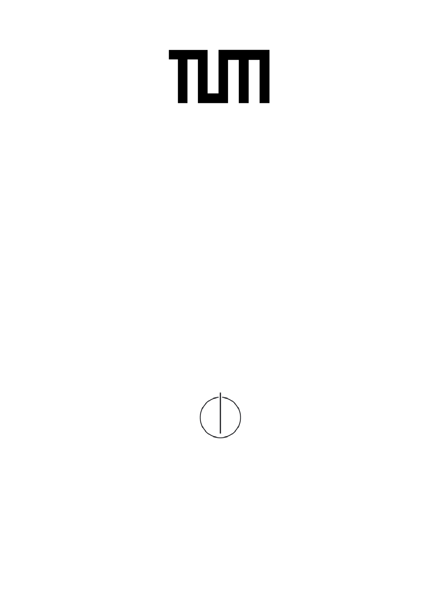
Technische Universität München
Fakultät für Informatik
Master’s Thesis
in Wirtschaftsinformatik
An auction format for the award of TV
advertisement rights
Andor Goetzendorff
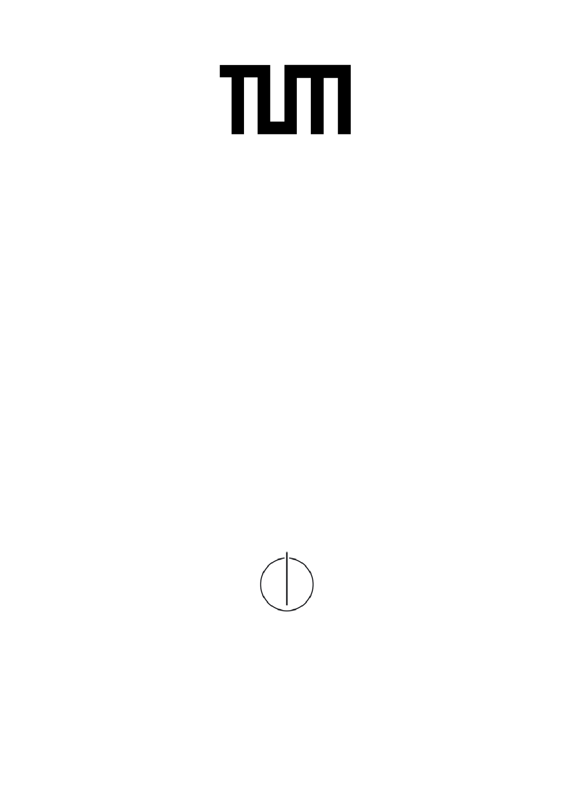
Technische Universität München
Fakultät für Informatik
Master’s Thesis
in Wirtschaftsinformatik
An auction format for the award of TV advertisement
rights
Auktionsverfahren zur Vergabe von TV-Werbezeiten
Editor: Andor Goetzendorff
Supervisor: Prof. Dr. Martin Bichler
Advisor: Dr. Pasha Shabalin
Submission date: 15 February 2013

Ich versichere, dass ich diese Master’s Thesis selbständig verfasst und nur die angegebe-
nen Quellen und Hilfsmittel verwendet habe.
I assure the single handed composition of this master’s thesis only supported by de-
clared resources.
München, 15 February 2013
. . . . . . . . . . . . . . . . . . . . . . . . . . . . . . . . . . . .
Andor Goetzendorff

Abstract
The German television advertisement market is dominated by complex market struc-
tures. As of today, no German television station is known to reduce the inherent in-
formation asymmetry typically found in private value markets by the introduction of
dynamic pricing mechanisms such as combinatorial auctions. Instead, stations rely on
enforced secrecy between bidders and multiple levels of discounts to achieve reasonable
revenues. After analyzing the market structure in general and domain specific auction
formats used or proposed in other countries for this market, this thesis elaborates a
new combinatorial auction format with a focus on efficiency and stability. Differing
from a fully enumerative bidding language in which bidders would need to specify all
interested bundles explicitly, the presented language allows a bidder the express his
interests based on custom valuations such as coverage or demographic reach, closely
resembling efficiency metrics already known to media agencies. Finding optimal so-
lutions to the underlying allocation and pricing problems takes a prohibitively large
amount of time for realistic market sizes, but near-optimal solutions can be found
relatively quickly. In order to use these suboptimal allocations to generate reasonable
solutions, two generic methods for approximating core-selecting payments are devel-
oped and subsequently analyzed and compared in a series of numerical experiments.
Complementing the simulating environment, a distributed system is developed in or-
der to further explore and illustrate the usage of the presented bidding language in an
intuitive and graphical form.
i

Acknowledgments
I would like to express my deep gratitude to Professor Bichler, and Dr. Shabalin
for their patient guidance and useful critiques of this research work. Special thanks
should be given to Professor Day, who, together with my supervisor and advisor, aided
me with the extraction and publication of parts of this thesis in form of a research
paper.
ii

Contents
1 Introduction 1
2 The TV Advertisement Market 5
2.1 Market Structure – Channels, Agencies, Campaigns . . . . . . . . . . . 6
2.2 The Acquisition Process of Advertisement Time . . . . . . . . . . . . . 8
2.3 Drawbacks of the Fixed Price Approach . . . . . . . . . . . . . . . . . 9
3 Combinatorial Auctions 11
3.1 The Vickrey-Clarke-Groves Auction . . . . . . . . . . . . . . . . . . . . 11
3.2 The Combinatorial Clock Auction . . . . . . . . . . . . . . . . . . . . . 14
4 Existing Approaches 19
4.1 Google TV Ads . . . . . . . . . . . . . . . . . . . . . . . . . . . . . . . 19
4.2 The Taiwan TV Advertisement Market . . . . . . . . . . . . . . . . . . 23
4.3 Applicability of the Existing Approaches to the German TV Ad Market 26
5 Market Design 28
5.1 Allocation Rule . . . . . . . . . . . . . . . . . . . . . . . . . . . . . . . 30
5.2 Payment Rule . . . . . . . . . . . . . . . . . . . . . . . . . . . . . . . . 32
6 Core Payments with Suboptimal Allocations 34
6.1 The TRIM Algorithm . . . . . . . . . . . . . . . . . . . . . . . . . . . . 35
6.2 The REUSE Algorithm . . . . . . . . . . . . . . . . . . . . . . . . . . . 37
7 The TvAuction Platform 42
7.1 System Architecture . . . . . . . . . . . . . . . . . . . . . . . . . . . . 43
7.2 The TvAuction Processor . . . . . . . . . . . . . . . . . . . . . . . . . . 43
iii

Contents
7.3 The TvAuction Front End . . . . . . . . . . . . . . . . . . . . . . . . . 46
7.4 The TvAuction Middleware . . . . . . . . . . . . . . . . . . . . . . . . 49
8 Experimental Evaluation 52
8.1 Research Design . . . . . . . . . . . . . . . . . . . . . . . . . . . . . . . 54
8.2 Comparison of REUSE and TRIM . . . . . . . . . . . . . . . . . . . . . 55
8.3 Comparison of REUSE and REUSE_LONG . . . . . . . . . . . . . . . 58
9 Conclusion 63
10 Bibliography 65
iv

List of Figures
2.1 TV Channels received per household on average, 1988-2011 (SevenOne
Media, 2012a) . . . . . . . . . . . . . . . . . . . . . . . . . . . . . . . . 6
2.2 The booking mask of the MYDAS Ad Sales Management System . . . 10
4.1 The Google TV ads targeting interface (Nisan et al., 2009) . . . . . . . 21
6.1 Reduction of the duality gap over time . . . . . . . . . . . . . . . . . . 34
7.1 Structure of the TvAuction Platform . . . . . . . . . . . . . . . . . . . 44
7.2 Running the TvAuction Processor from the command line . . . . . . . 45
7.3 Adjusting the target values . . . . . . . . . . . . . . . . . . . . . . . . . 47
7.4 AngularJS – Interaction with the Browser’s Event Loop
1
. . . . . . . . 48
7.5 ZeroMQ sockets used during auction solving. . . . . . . . . . . . . . . . 50
8.1 REUSE, TRIM – revenue, efficiency . . . . . . . . . . . . . . . . . . . . 56
8.2 REUSE, TRIM – iterations, runtime, switches . . . . . . . . . . . . . . 57
8.3 REUSE, TRIM – price ratios – median . . . . . . . . . . . . . . . . . . 57
8.4 REUSE, TRIM – price ratios – quantiles . . . . . . . . . . . . . . . . . 58
8.5 REUSE, TRIM – steps (example) . . . . . . . . . . . . . . . . . . . . . 59
8.6 REUSE, REUSE_LONG – revenue, efficiency . . . . . . . . . . . . . . 59
8.7 REUSE, REUSE_LONG – iterations, runtime, switches . . . . . . . . 60
8.8 REUSE, REUSE_LONG – price ratios – median . . . . . . . . . . . . 60
8.9 REUSE, REUSE_LONG – price ratios – quantiles . . . . . . . . . . . 61
8.10 REUSE, REUSE_LONG – gaps . . . . . . . . . . . . . . . . . . . . . . 61
8.11 REUSE, REUSE_LONG – example of integrality gaps over time . . . . 62
v

1 Introduction
The television advertisement market is Germany’s largest advertisement market mea-
sured by expenses; approximately 11.1 bn
1
€ were invested in 2011 alone for all chan-
nels combined, according to SevenOne Media (2012b). Despite its importance as
primary source of revenue for TV channels
2
, the methods used to sell time in com-
mercial breaks to interested parties did not change significantly over the last three
decades. Specifically, no German channel is known to use a form of dynamic price
discovery in order to optimize revenues. Instead, channels are relying on fixed pricing
on a per-unit basis, market intransparency, multiple levels of discounts, and enforced
secrecy between potential buyers to obtain reasonable revenues. This is a stark con-
trast to other markets, such as the sale of wireless spectrum licenses or the acquisition
of online advertisement space.
Starting in 1994, the United States’ Federal Communication Commission started us-
ing auction formats to sell and assign licenses for wireless communications, including
bands used for television and cellular phone communication. These so called “spec-
trum auctions” finally provided the necessary means for the governmental institution
to sell licenses directly, instead of holding lotteries or comparative hearings (methods
used before the introduction of the spectrum auctions). While the used market design
suffers from several drawbacks (as discussed in section 3.2), it provided not only a more
efficient, but also more profitable way to sell spectrum licenses in the US compared to
the previous alternatives. In recent years, auction formats were adopted by a series
of countries, and are currently in use in several European states, including Germany,
1
short scale
2
The leading German sports channel SPORT1 generated approximately 84% of its revenue by
selling advertisement time in 2011, according to its revenue and loss statement (http://www.
bundesanzeiger.de).
1
1 Introduction
with highly successful results
3
.
While the use of a dynamic price discovery mechanism in form of an auction could
be regarded as a challenge for established markets structures such as the television
advertisement market, several countries were able to successfully implement auction
formats, in some cases vastly exceeding their expectation regarding the generated rev-
enue
4
. A thorough analysis of two of these market designs is provided in chapter 4,
depicting a simultaneous multiple round auction used by Google Inc. from 2007 to
2012, and a combinatorial auction proposed for the television advertisement market
in Taiwan.
In contrast to single-item auctions, commonly known to the public because of on-
line auction houses such as eBay, all of the market designs discussed in this paper
focus on combinatorial or parallel auctions. These auction formats differ from the
classic single-item auction as they enable bidders to address multiple items at once
by defining packages of items, also called bundles. In a strict combinatorial auction
format, this enables a bidder to express their interest in goods as complementari-
ties or substitutes, i.e. the valuation of a certain combination of goods is more or less
valuable to them then the sum of the valuations for the single equivalents, respectively.
The introduction of this expressiveness introduces several new issues: Finding the
optimal allocation for such an auction is N P-complete (Sandholm, 2000) and there-
fore not tractable for any but very small sizes of items and bidders. In addition, the
inherent complexity because of the high possible number of bundle-price pairs a bidder
can communicate
5
demands for a compact bidding language in order to aid human
bidders in their decision and communication. If complementarities between items can
be neglected, the simpler, parallel auction is a viable alternative for the strict com-
binatorial auction. This format eliminates the possibility to directly express super-
or subadditivity between items, providing a more straightforward bidding process, as
3
In 2000, Germany’s UMTS spectrum auction generated a revenue of 50.8 bn €, exceeding expecta-
tions (http://www.bitkom.org/de/themen/54894_64598.aspx)
4
http://www.wantchinatimes.com/news-subclass-cnt.aspx?id=20121118000038&cid=1504
5
For N items, up to 2
N
− 1 bundles can be defined.
2

1 Introduction
bidders simply have to express their valuations of all individual items. In section 3.2,
an example of such a parallel auction format is presented, alongside its strengths and
weaknesses.
In addition to the the allocation rule used in a specific market design, the imple-
mented pricing mechanism influences heavily how bidders will participate in an auction
according to their valuation: As an example, the simple pay-as-bid (also called first-
price) payment rule makes the resulting prices easy to grasp, but introduces incentives
to shade the bidders’ true valuations.
The ability to express non-additive valuations is necessary for a market design tar-
geting the TV ad market, as bidders aim to achieve network effects by airing adverts
multiple times during a certain time span. Still, all of the academically discussed
designs for this market assume either additive valuations, eliminating the possibil-
ity to express complementarities between airings, or are not addressing the strategic
implications of their pricing rule.
objectives and structure of this thesis
The presented thesis provides the reader with a tentative market design tailored for
the television advertisement market, emerged from an analysis of the German TV ad
market in general, combined with a series of interviews taken with marketing person-
nel at a private German TV channel (chapter 2).
After first presenting combinatorial auctions in general (chapter 3) and already ex-
isting implementations in this market (chapter 4), a new compact bidding language is
created that enables bidders to express their demands in form of campaigns, allowing
them to express complementarities between airings and to prioritize advertisement
spaces according to their own valuations. Combined with the presented pricing rule,
the proposed market design tries to be as efficient, stable and strategy-insensitive as
possible, permitting bidders to communicate their true valuations without having to
fear potential overpricing (chapter 5).
3

1 Introduction
Apart from providing the theoretical framework on how to model such a market,
this thesis tries to further harden the underlying algorithms by allowing them to pro-
duce reasonable results even under suboptimal solutions during the winner and price
discovery (chapter 6). As seen in the following chapters, this feature is necessary to al-
low the model to be used in a realistically sized market. Two very distinct approaches
on how to deal with this issue are developed and subsequently tested in simulations
regarding their overall revenue, efficiency, and strategy-proofness (chapter 8).
Complementing the market model, a prototypical implementation of the algorithm
is built and made available, allowing an interested party to experience and use the
underlying market mechanism in an interactive form. The presented system is imple-
mented in a distributed manner, embracing parallel technologies from the ground up.
This allows the system to scale horizontally to host as many auctions in parallel as
needed, given enough connected resources (chapter 7).
4

2 The TV Advertisement Market
The television advertisement market is, with an annual turnover of 11.1 bn €, the
biggest advertisement market in the public sector, representing approximately 42% of
the annual amount invested in public advertising (see SevenOne Media, 2012b). While
it seems clear that this amount is a driving force in the television market, its impact
on each channel is not uniform.
According to Bauer (2001), German television channels can be divided into cat-
egories, depending which markets are targeted during airtime: The TV advertising
market consists of the television audience watching a broadcast with a buying in-
tent, such as an advertising broadcast. The TV recipients market, on the other hand,
consists of the audience watching a broadcast which (at least initially) does not demon-
strate a buying intent, but is watching because of the information or entertainment
provided by the channel. While some channels are either directed exclusively at the
former (such as QVC, a multinational corporation specializing in televised home shop-
ping), or at the latter (such as several government sponsored channels such as 3sat or
arte), the majority of channels is addressing both markets. If this is the case, inter-
dependencies between these markets cannot be avoided, as the success of a program
in the recipients market is directly influencing the amount of potential viewers of the
products or services displayed in the aired adverts (Bauer, 2001).
After the deregulation of frequencies for television channels starting in 1984, the
amount of channels a household can receive on average increased continuously, as seen
in fig. 2.1. This increase in supply is not matched with a similar growth in demand,
however: Between 1985 and 1998 the average amount spent watching television in
Germany by an adult increased only about 37%. This market structure has caused
5
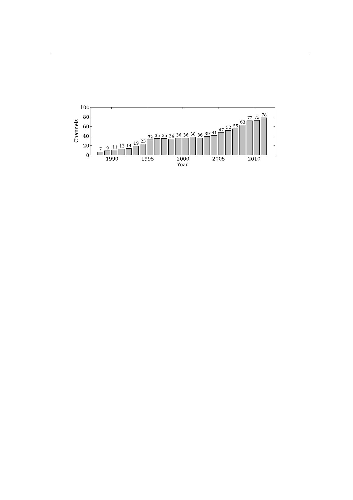
2 The TV Advertisement Market
the German TV recipients market to become one of the most competitive advertise-
ment markets worldwide (Bauer, 2001).
Figure 2.1: TV Channels received per household on average, 1988-2011 (SevenOne
Media, 2012a)
In order to differentiate itself from its competitors, channels typically try to provide
a mixture of innovative advertisement formats, multiple discounts and facilitations in
the booking process. As stated in chapter 1, no channel is currently offering a form
of dynamic price discovery. Instead, channels are selling airtime on a first-come, first-
served basis. Because of the high complexity of advert placement, interested parties
are usually not directly involved in the acquisition of airtime, but hire media agencies
which in turn will try to optimize the revenue and efficiency of an advertisement
campaign. The details of this process are explained in the following section.
2.1 Market Structure – Channels, Agencies,
Campaigns
The creation and placement of an advert is typically not done by a brand owner
directly. Instead, the interested company approaches media agencies, which will be
then hired to create and/or get in contact with channels in order to air the ad. In order
to achieve an optimal response from the future audience, the creation and airing will
be tailored towards one or multiple target groups, i.e. a specific subset of the watching
population. A target group can be defined by simple values such as the marriage
status, the age or sex of a viewer, but can also be arbitrarily complex, referring to
6

2 The TV Advertisement Market
e.g. a specific social status or behavioral pattern. These groups represent the part of
the population typically seen as most susceptible audience regarding the ad, i.e. the
people most inclined to acquire the promoted product or service. In order to build up
network effects and a higher level of brand awareness, adverts are typically not aired
once or sporadically, but grouped into a campaign. A campaign is directed at the
same target groups, takes place during a determined time span, and is measured by
its efficiency during and after airing. The two most prominent metrics in measuring
this efficiency are as follows:
CPGRP – Costs per Gross Rating Point
A Gross Rating Point (GRP) is defined as the percentage of a specific target group
watching a single advert. A GRP of a campaign is then built by adding up all GRPs
of all single ads.
As an example, let’s suppose the target audience is male, and its age should be
between 25-55. Let’s further suppose the ad is aired five times, and during each airing
50% of the watchers matched the criteria of the target group. The GRP would then
be 250. The Costs per Gross Rating Point (CPGRP) is then defined by dividing the
total campaign cost by the GRP achieved during airing. If 100 000 € was spent for
this campaign, the CPGRP would therefore be 400.
CPM – Costs per Mille
An alternative measure of efficiency is coined by the term Costs per Mille, or CPM.
Like the CPGRP metric, it is used as a benchmark for the relative cost of an adver-
tising campaign. In order to determine the CPM, the total number of viewers of all
relevant target groups are summed and divided through the total cost of the campaign.
Focusing on the same target group as in the previous paragraph, let us suppose that
each slot was watched by 1000 people. The CPM would then be calculated as follows:
CP M = 100 000/(5 · 0.5 · 1000) = 40.
7

2 The TV Advertisement Market
Difference in measuring the campaign efficiency
As seen in the previous examples, the presented methods take an entirely different
approach on how to measure efficiency: The CPM is a direct measurement of how
much was spent for each potentially interested viewer, and can be compared to other
traditionally used performance based tools such as the Costs per Acquisition metric
used in sales.
The concept of the CPGRP benchmark takes a very different approach: The ab-
solute number of viewers is ignored, focusing on how many times an audience group
has seen an ad during the campaign, instead. Because of this, the CPGRP is only
useful as a metric to discover an ex-ante efficiency, usually used to determine on which
channel, or on which programs/time slots to air. The advertiser will still want to know
how many people were actually reached during and after a campaign run.
2.2 The Acquisition Process of Advertisement Time
Based on the insights acquired during the interviews with employees of a private Ger-
man television channel, this section tries to illustrate the booking process typically
found in Germany for an interested party in advertising. After creating and deter-
mining the specific target groups (see section 2.1), a series of advertisement slots have
to be acquired to represent the desired campaign. While seemingly simple, this task
requires rather deep market knowledge and time, as the acquisition of airtime is done
in a first-come, first-served basis.
A channel categorizes different slots with specific advert codes (an example can be
seen in table 2.1). These codes, a nationwide standard, allow an interested party to
enact in an initial screening in discovering potentially interesting advertisement slots,
taking into account its type (e.g. a “classic” advert or “split-screen”), at what time it
is aired, and to which price group it belongs. To further aid the buyer in the process,
channels typically augment this information with additional facts about the surround-
ings of the advert slots, and enable the buyer to filter the provided slots extensively
by e.g. price, time of day and remaining length, as seen in fig. 2.2.
8
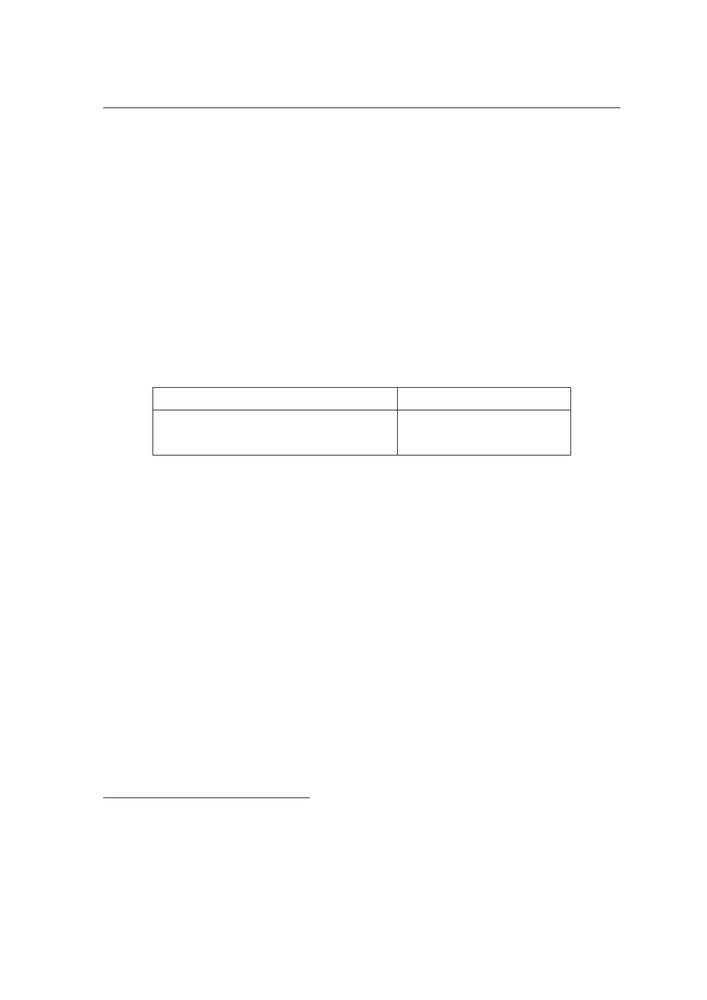
2 The TV Advertisement Market
Depending on when and how much is spent, a channel may provide multiple types of
discounts such as bulk discounts or early-bird discounts. These discounts can reduce
the total price for an amount up to 10%
1
even on smaller campaigns and are usually
manually negotiated for bigger acquisitions.
While the return of reserved airtime to the channel is usually possible if the airing
will take place several weeks or months in the future, acquisitions are “locked” at least
2 weeks before airtime, disallowing a buyer to withdraw. It is possible however to
acquire additional time (if available) even days before airtime, often at a discounted
price.
Advert Code Pricing Information
type price group hour ad slot no. price (Aug.) price (Dec.)
60 40 18 21 427 €/s 618 €/s
Table 2.1: advert code (example)
2.3 Drawbacks of the Fixed Price Approach
Even though the selection of advertisement time is greatly enhanced by the provided
filtering methods, it is not possible for the buyer to discover or even approximate
an ex-ante efficiency (in terms of CPM) without manually forecasting the amount of
watchers in his target group and weighting it against the asked price for a determined
advertisement slot. This problem is further complicated by the inclusion of the addi-
tional cost reductions possible due to bulk discounts. If the buyer tries to withdraw
from such a long-term contract, this could in itself cause high transactional costs and
efficiency losses.
1
As an example, the German (publicly funded) TV channel ZDF grants a discount of 9% for orders at
4 Mio. €, after which the discounts are manually negotiated (http://www.zdf-werbefernsehen.
de/tarife/rabatte.html).
9
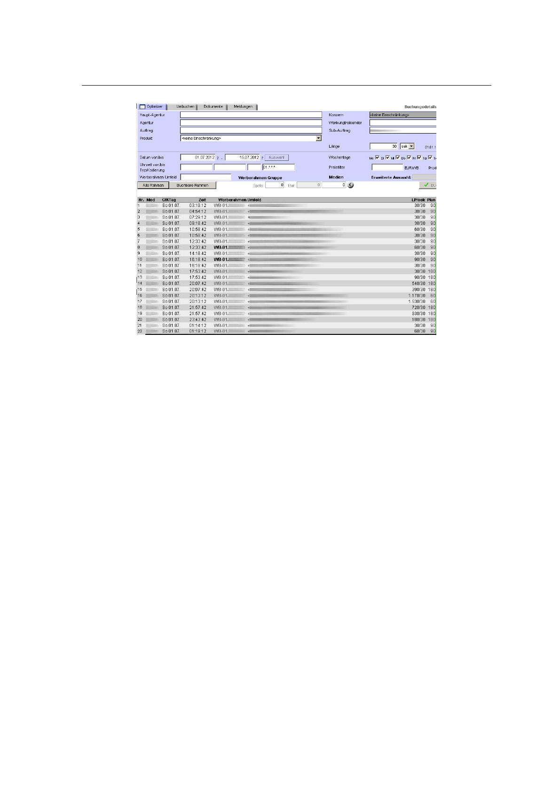
2 The TV Advertisement Market
Figure 2.2: The booking mask of the MYDAS Ad Sales Management System
A perhaps even bigger problem is faced on the channels’ side. While potential buyers
are able to estimate the values of their possible acquisitions, this is much more difficult
for a channel, because these estimates remain private, and there is no incentive for
buyers to reveal their true valuations. Because of this information asymmetry channels
face a pricing problem which leads to potentially suboptimal revenues. If prices are
too high, a part of the channels inventory will not be sold even if there was a demand
for it. On the other hand, if prices are too low, the channel faces a revenue reduction
simply because of the lower prices, even if all slots will be sold.
10

3 Combinatorial Auctions
A solution concept that addresses the aforementioned pricing problem is the combina-
torial auction. In it, a number of items are auctioned concurrently, allowing bidders
to express and quantify their preferences of whole bundles of items. By auctioning
the provided set of items against the received bundle bids directly, the auctioneer
is able to allocate the provided resource more efficiently than by selling these items
separately. This gain in efficiency is directly achieved by the ability to express super-
or subadditivity between items (if items are complementarities or substitutes, respec-
tively), something not directly possible if the interested items were sold independently.
While the applications for combinatorial auctions are numerous, the perhaps most
prominent example are the “spectrum auctions”, as described in chapter 1. While
the market structure is not more complex than other procurement markets, the high
financial stakes involved in these events has caused the adaption and refinement of
several market designs for these auctions (see Cramton and Ausubel, 2006; Cramton,
2009).
In the following sections, two auction formats are presented and their implications
discussed. These formats will form the basis of the analysis of existing market designs
in the television advertisement market as seen in chapter 4 and in the developed market
design in chapter 5.
3.1 The Vickrey-Clarke-Groves Auction
The Vickrey-Clark-Groves auction (also called VCG or simply Vickrey auction) is a
generalization of the second-price sealed-bid auction developed by William Vickrey in
11
3 Combinatorial Auctions
1961. Before starting to describe the VCG auction, the single-item Vickrey auction is
shortly depicted, along with its implications:
In an auction with a single item i with a price p, we consider a list of bidders k ∈ K
with a scalar value v
k
for this item. Additionally, each bidder has a quasi-linear utility
function r
k
: I → R regarding its valuation v
k
and the price p he has to pay for this
item
1
. The single-item Vickrey auction can then be simply defined as:
1. Let the auction winner be the bidder w ∈ K where w = arg max
k
v
k
(i)
2. Let this bidder pay the bid price if the second highest bidder: p = max
k∈K
−w
v
k
(i)
It can be easily demonstrated that this auction mechanism provides incentive com-
patibility, meaning that the manipulation of its communicated valuation can never
increase the bidders’ utility (see Nisan et al., 2007, pp. 216-217) and provides efficient
outcomes under truthful valuations.
This mechanism is not only existent for single-item auctions, but can also be gener-
alized. An example of a generalized VCG mechanism (f, p
1
, . . . , p
n
) for bidders with
non-negative valuation functions v
i
can be defined as follows:
1. f maximizes social welfare, i.e. f(v
1
, . . . , v
n
) ∈ arg max
a∈A
k∈K
v
k
(a), where a
stands for a possible outcome out of all feasible outcomes A.
2. The bidder k’s price p
k
= v
k
(a) −
m∈K
v
m
(a) −
m∈K
−k
v
m
(a
−k
)
,
where a
−k
= f(V
K
\ {v
k
}).
Intuitively, the generalized VCG mechanism follows the same idea as its single-item
precursor: Each winner pays their bid price minus the surplus the bidder is generat-
ing with his bid. If applied to only one item, the VCG mechanism behaves exactly
like the single-price Vickrey auction regarding the generated revenue, and the already
mentioned incentive compatibility can also be proven for the more general VCG auc-
tion (see Nisan et al., 2007, pp. 219 ff). A simple example regarding the described
mechanism can be seen in table 3.1.
1
A typical quasi-linear utility function is p − v
k
(i).
12
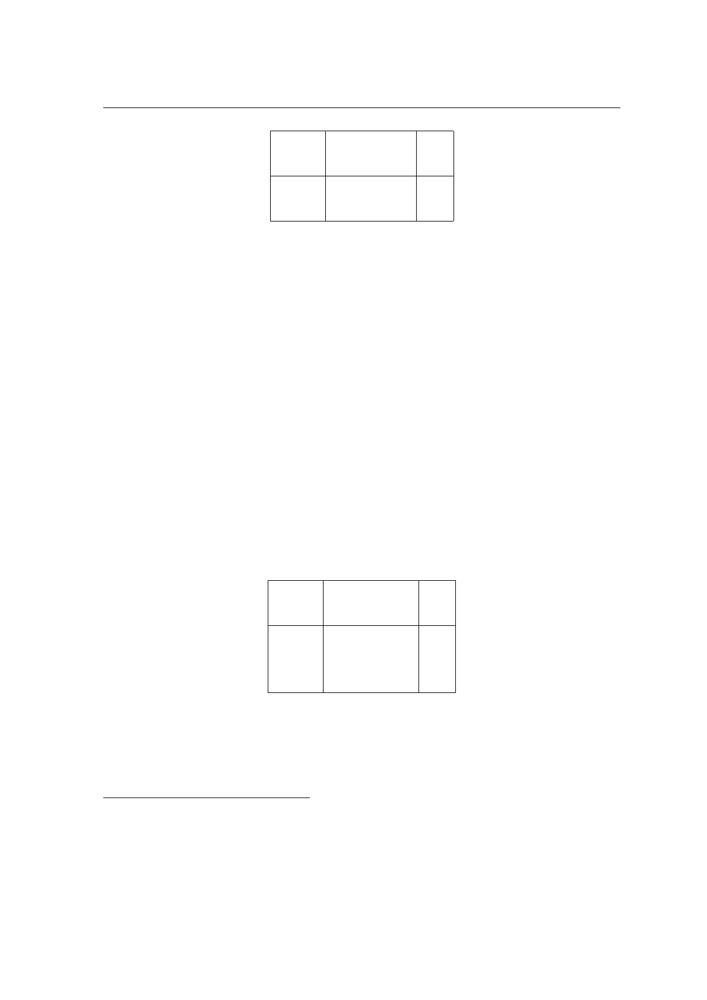
3 Combinatorial Auctions
Bidder
Bid
p
vcg
i
A B AB
1 0 0 12 10
2 10 10 10 0
Table 3.1: VCG auction example – 2 bidders
Albeit being the only auction mechanism that leads to efficient outcomes, has a
dominant-strategy property (i.e. is incentive compatible) and takes a zero payment
from losing bidders (see Ausubel and Milgrom, 2004), the VCG auction suffers from
several serious drawbacks that make it difficult to use in a real-world scenario.
missing revenue monotonicity
In a mechanism that satisfies revenue monotonicity, a seller’s revenue is guaranteed to
weakly increase as the number of bidders grows. While increasing competition should
intuitively weakly increase prices in any market where goods are sold, this does not
have to be the case in a VCG auction, as seen in table 3.2. This example is identical
to table 3.1 except for the addition of a third bidder
2
, but it does indeed provide a
lower revenue to the seller.
Bidder
Bid
p
vcg
i
A B AB
1 0 0 12 0
2 10 10 10 2
3 10 10 10 2
Table 3.2: VCG auction example – 3 bidders
This non-monotonicity makes the mechanism vulnerable to shill-bidding by either
hiring another bidder or incorporating multiple bidding identities: With a valuation
2
The non-monotonicity of seller revenues can be achieved not only by changing the set of bidders,
but also by changing the amount of the placed bids (i.e. by lowering bids the seller’s revenues can
potentially increase and vice versa) in a VCG auction (Ausubel and Milgrom, 2004).
13
3 Combinatorial Auctions
structure as seen in table 3.1, the payoff of bidder 2 would change from 0 to 6 if he
incorporated a “fake” bidder 3 with the same payment vector as bidder 2. Apart
from reducing the sellers revenues, this also leads to inefficient outcomes regarding the
overall social welfare if shill-bidding cannot be avoided.
non-core outcomes
Connected with the just mentioned issue is the possible deficiency of “core” outcomes.
The core is defined as a set of all possible outcomes where no sub-coalition of the
“grand coalition” (i.e. the seller and all bidders) can achieve a higher utility on its
own. While this is the case in the example in table 3.1, in 3.2 it is not: A coalition
formed by solely the seller and bidder 1 is “blocking” the current outcome, as it could
settle for any payment between 4 and 12, resulting in a bigger payoff for both seller
and bidder 1. It should be noted that the mentioned drawbacks do not take place
if the participating bidders are bidder-submodular
3
or if every bidder has substitute
preferences. While adding artificial constraints to achieve these market structures is
possible in some cases, it greatly narrows down the possible uses of the VCG mecha-
nism for generic unilateral markets such as combinatorial auctions.
Another restriction for the VCG auction can be derived by its computational hard-
ness, as it has to solve f not only once, but n + 1 times where n is the amount of
winners discovered during the initial winner determination
4
.
3.2 The Combinatorial Clock Auction
The Combinatorial Clock Auction and its more general market mechanism, the Simul-
taneous Ascending Auction, is one of the most prominent examples of selling multiple
goods in a specific market. First developed for the FCC spectrum auctions in 1994, it
was soon adapted for several other markets such as electricity, gas and other environ-
mental markets (Cramton et al., 2006).
3
For a definition of bidder submodularity see Milgrom (2007, p. 947).
4
The winner determination of a combinatorial auction is N P-complete (see Sandholm, 2000).
14
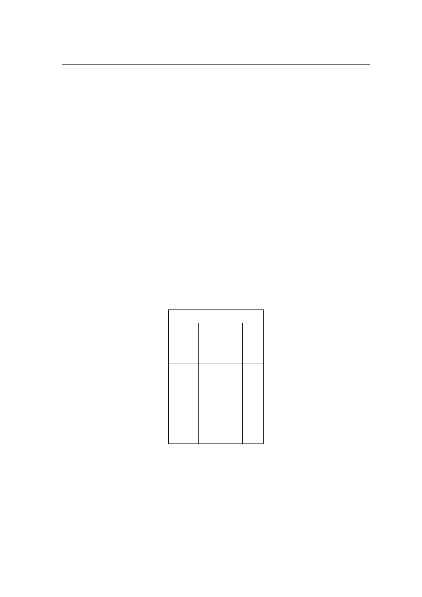
3 Combinatorial Auctions
As in its more general counterpart, the Clock auction requires all bids to be on in-
dividual items, rather than bundles. This can cause for a bidder to win some, but not
all of his placed bids. Because of this, the Clock auction (or any other simultaneous
ascending auction for that matter) is not a “true” combinatorial auction mechanism
because it is not directly possible for a bidder to express complementarities or substi-
tutes between items. Nevertheless, its vast success in several markets as the spectrum
auctions have shown that a high efficiency can be reached albeit its “simpler” market
design (Cramton, 2009).
The general market mechanism of the Clock auction takes place in discrete rounds,
and can be summarized as follows: At the beginning of each round, the auctioneer
announces a price vector containing all prices for all items he wants to sell. Bidders
are then able to express their demands on items at the current price vector. The
auctioneer increases the prices for all goods with an excess in demand, and bidders
can again, in a new round, express their preferences. The auction terminates as soon
as no single item is overdemanded.
valuations
A B AB
v
1
0 0 12
v
2
10 10 10
round ask prices
t=1 1
1,2
1
1
2
t=2 2
1
1
1,2
3
. . . . . . . . .
t=11 6
1,2
6
1
12
t=12 7 6
2
13
Table 3.3: Clock Auction – inefficient allocation with complementarities
An example of a clock auction can be seen in table 3.3. In it, the 2 bidder example
of section 3.1 was reused and implemented using the clock auction, resulting in an
15
3 Combinatorial Auctions
efficiency of 83%
5
. This is a stark contrast to the Vickrey auction presented in the
last section, which always leads to efficient solutions under truthful bidding
6
, a condi-
tion inherent to the underlying price linearity and the iterative nature of the algorithm.
Apart from the inefficiency observed in clock auctions when complementarities exist,
several other weaknesses have been discovered in its design, as stated in Cramton
(2009):
• Large bidders have a strong incentive in demand reduction before the bidder’s
marginal value is reached in order to win at lower prices.
• Bidders have an incentive to collude, especially if there is weak competition.
• If activity rules are implemented
7
, bidders have an incentive of “parking” on not
interesting spots, expressing their true demands only later on.
• Because bidders are not able to express complementarities or substitutes in form
of bundles directly, bidders potentially face exposure or hold up problems.
These points further complicate the strategies bidders should follow in a Clock
auction.
ascending auctions and complementarities
In order to maintain the virtues of the Clock auction (i.e. its linear pricing which
leads to efficient price discovery and perceived fairness), Cramton and Ausubel (2006)
combined this auction with a final proxy phase, and coined this format Clock-Proxy
Auction: The auction starts with the Clock mechanism. As soon as no item is overde-
manded, all previously submitted bids are then entered as mutually exclusive bids into
an Ascending Proxy Auction
8
, a nonlinear, personalized, efficient and core-selecting
5
The efficient coalition in this example is (1 ← {A, B}, 2 ← {}) and has a value of 12. The clock
auction, in contrast, assigns (1 ← {}, 2 ← {B}), valued 10.
6
The clock auction’s efficiency can be as low as 0% under certain bidding behaviors and market
structures (see Bichler et al., July 2012).
7
An example of this is that a bidder can only decrease his demand during rounds.
8
A practical implementation of such an auction is the iBundle(3) auction (see Parkes, 1999).
16

3 Combinatorial Auctions
auction mechanism, which then calculates the final outcome. This allows the auction
to address non-additive valuations, without adding much complexity to the bidding
process, i.e., there is no need for the bidders to express valuations for all possible
2
N
− 1 bundles for N items.
Because of the proxy phase, several restrictions that would be necessary in a pure
clock auction can be relaxed. In particular, the Clock-Proxy auction avoids the expo-
sure problem by allowing bidders to drop items for which there is no price increase, if
any other item on which the bidder bid on increased in the last round. Similarly, the
proposed activity rule is less restricting in comparison to the clock auction: Instead
of using the aggregate item quantity as its basis, an activity rule based on valuations
of bundles as a whole is used (revealed preference activity rule). This allows bidders
to bid in a straight-forward matter.
While this hybrid auction approach provides superior efficiencies and core outcomes
under truthful bidding behavior, it reintroduces the computational complexity of being
an N P-hard problem because of the final winner determining proxy round the proxy
mechanism has to calculate (Parkes, 1999). Several other attempts were described by
Bichler et al. and Maldoom to achieve a higher efficiency by changing the behavior
of the final clock round. The approach taken in (Maldoom, 2007) shares similarities
with the presented Clock-Proxy auction by introducing a series of open rounds and a
final sealed-bid round. Differing from the generic Clock-Proxy design, the presented
algorithms assume a market structure that can be divided into “categories” in order
to group matching items, and implements a pricing rule that ends with minimal core
prices. The presented “price update rules” in (Bichler et al., July 2012) would trans-
form the auction into a true combinatorial auction (i.e. into a N P-hard problem),
eliminating one of the virtues of the clock auction. Differing from the Clock-Proxy
auction, the proposed changes would require bidders to bid on all possibly interesting
slots (powerset bidding) in order to reach efficient outcomes, making it prohibitive for
any but small combinatorial auctions.
Reaching efficient solutions with an ascending proxy auction is inherently impossi-
17
3 Combinatorial Auctions
ble because of its price linearity if bidders have superadditive valuation for bundles.
While novel extensions exist, they all re-introduce the obligatory computational hard-
ness, vastly reducing the tractable size these auction types can address. Nevertheless,
ascending proxy auctions, and the clock auction in particular, achieve reasonable re-
sults in most real-world settings and provide a simple yet effective way to implement
markets.
18
4 Existing Approaches
In order to reduce the information asymmetry depicted in section 2.3 caused by the
de-facto standard of asking fixed prices for advertisement slots, several attempts have
been made by implementing “smarter” market mechanisms. Two of these very dif-
ferent approaches are presented in this chapter and then compared to the depicted
market needs as stated in chapter 2.
The first part of this chapter presents a simultaneous ascending auction, used to
address the US television advertisement market and was used successfully for between
2008 and 2012. Facing similar problems, a rule-based combinatorial auction was pro-
posed for the advertisement market in Taiwan and developed by Cheng et al. in 2012.
Finally, the applicability of these two auction formats onto the German market is
analyzed.
4.1 Google TV Ads
Being already proficient in the online advertisement market through its platforms
AdWords and AdSense, Google started aggressively entering the TV advertisement
market in late 2008 and soon covered a high number of channels in the USA
1
. This
chapter tries to depict the main market mechanisms implemented in order to sell ad-
vertisement time to potential buyers.
At its basis, the presented auction represents a continuous day-ahead simultaneous
ascending auction, similar to the mechanism depicted in section 3.2. True to the spirit
1
Approximately one year after launching the system, it offered access to advertisement slots from
over 100 channels
19
4 Existing Approaches
of the single-item ascending auction, the market design implemented by Google tries to
achieve a walrasian tâtonnement by reaching minimal competitive equilibrium prices
2
.
The needed input for the mechanism is
1. The inventory for the next day that the mechanism should sell. Specifically, this
inventory consists of specific time-ranges for each participating channel and is
split into discrete durations of 15 seconds, coined slots.
2. All campaigns issued by bidders, whose demands overlap with the offers by that
inventory. A campaign contains budget and pricing information a specific bidder
inserted, alongside his advert of choice and set of interested channels, programs
and runtimes.
The auctions result is then simply the schedule, i.e. which bidders’ adverts are aired,
alongside the pricing information for each slot.
market design
In order to participate in an auction, a bidder has to specify a campaign, as stated in
the last paragraph. This involves three steps: The choice of an advert to use for the
campaign, the selection of interested slots (see fig. 4.1), and the set up of the bidder’s
budget limits. This last constraint is specified by two complementing values: A per-
advert limit and a maximum amount to spend per day. The splitting between these
two values allows the bidder to regulate how much can be spent on a single advert
and also estimate its costs over a longer time span.
As the correct value of a specific advert slot is impossible to estimate without know-
ing the actual reach, the CPM metric (see section 2.1) is used for the per-ad limit.
Because of the same reasons, the pricing information returned by the auction mecha-
nism is returned in the same metric, only to be converted to the actual price later on.
After having collected the needed input from both channels and interested buyers,
the auction proceeds in a series of rounds. In each of these rounds, a greedy matching
2
This is equivalent to a bidder-Pareto-optimal core price vector in an auction and has obvious
advantages over e.g. having a VCG price vector (see section 3.1).
20
4 Existing Approaches
Figure 4.1: The Google TV ads targeting interface (Nisan et al., 2009)
algorithm tries to identify the most profitable
3
slots for each bidder and expresses
demands on them on behalf of the bidder in descending order until the bidder’s daily
budget is exhausted
4
. This procedure continues until no single item is overdemanded.
dealing with complementarities
The assumption of Nisan et al. (2009) is that a bidder’s valuation of won airtime-slots
S can be treated as additive up to the budget limit, i.e. v
i
(S) =
j∈S
v
i
(j). However,
for any campaign that has an associated advert longer than a single slot (an advert
typically has the length between 1 and 3 slots), adjacent slots (and their prices) are
grouped together and treated as single slots during the identification and demand ex-
pression of these campaigns throughout the bidding process.
As this creates strong complementarities between auctioned slots, inefficient allo-
3
The profitability of a single slot j for a bidder i is defined as v
i
(j)/p
j
.
4
Because of the relative nature of the CPM metric and the, at the time of the auction, unknown
actual reach, the bidder’s daily budget is treated as a “soft” limit. During the runtime of a cam-
paign a the budget spent on a single day can go to a maximum of 120%, and will be dynamically
adjusted in subsequent runs to match the inserted daily budget.
21

4 Existing Approaches
cations and remnant slots are likely to occur
5
. In order to reduce the number of
unallocated slots, the auction implements a new set of rounds, decreasing the prices
of all free slots during runtime up to their reserve price. In each of these rounds, each
bidder continues to demand all profitable slots in descending order until he exhausts
his budget
6
. As soon as all items are allocated or all items reach their reserve price,
the auction terminates.
valuation
The presented algorithm stands out for it simplicity, both in a conceptual and compu-
tational sense: The usage of the implemented greedy algorithm guarantees polynomial
runtime. This allows its usage also in scenarios where combinatorial auctions because
of their N P-hardness would be impossible to solve optimally. This also applies to the
second stage of the algorithm, where a novel adjustment was discovered to deal with
unallocated inventory. By decreasing free slots gradually after an initial assignment,
the overall efficiency of the auction is further increased.
However, even with the assumption of additive valuation for each bidders’ airings,
strong complementarities exist as soon as any bidder needs more than a single slot
in order to air a single advert. The usage of a simultaneous ascending auction in
the form presented here is therefore bound to achieve suboptimal allocations with the
‘straightforward’ bidding behavior used by the auction’s proxy bidders. Moreover, the
change from price increases to decreases in the second round of the auction (similar
to a Dutch auction) is introducing increasingly complex bidding behavior.
According to Nisan et al. (2009), this further deviation of incentive compatibility
is regarded as “practically acceptable” in their case, but a more thorough theoretical
analysis would be useful to determine the potential of price reduction through bid
shading in relation to the bidders’ existing complementarities.
5
This is analogous to the description in section 3.2 and can also be observed in table 3.3.
6
It is also possible to acquire free slots in conjunction with already taken ones. In this case, a bidder
is also forced to buy all slots that would become unallocated because of his acquisition.
22
4 Existing Approaches
4.2 The Taiwan TV Advertisement Market
The advertisement price in Taiwan is traditionally set by manual contracts between
advertising agencies and channels. As such, their price typically varies between peri-
ods depending on the current demand. A sudden boom in the advertisement market
in 2009, following with price increases of up to 400% within one day, were the initiator
to inspect alternative market mechanisms for the Taiwan TV advertisement market.
In order to acquire advertisement time in Taiwan, two selling methods are common:
The spot buy, where the interested party specifies the exact times when his ads should
air, and the CPRP buy. If the latter is chosen, the channel guarantees to the bidder
that a predetermined number of target points is reached during a certain time frame
for each target group the buyer defines (see section 2.1). This method is usually less
expensive compared to the spot buy, as the channel can also use his unpopular time
slots to meet the GRPs demanded.
Tier Time frame Price per 10 sec.
A 18:00-01:00 $1500
B 07:00-18:00 $800
C 01:00-07:00 $300
A+C: $1600; A+B: $1900; A+B+C: $1910
Table 4.1: Example of time tiers in a day (Source: Cheng et al., 2012)
In order to promote the selling of slots in unpopular tiers, TV channels in Tai-
wan provide bundle discounts if popular and unpopular slots are acquired together.
table 4.1 shows an example of prices regarding both single slots and bundles. The
concept of bundling unpopular time frames for a discounted price was transferred also
in the mechanism presented below, and forms indeed one of its novel concepts.
market design
This paragraph will present the main points of the market design proposed by Cheng
et al. for the Taiwan ad market. Because of its size, only the main points will be pre-
23

4 Existing Approaches
sented in this paragraph. For the complete problem please see (Cheng et al., 2012).
The study suggests a multi-unit combinatorial auction mechanism with discounted
prices for slots that air within a time frame with little demand (i.e. non-prime time
slots). The underlying reason for using a combinatorial auction, instead of single-item
auctions or a simultaneous ascending auction is that, according to the authors, com-
plementarities between the airing of commercials do exist.
While the overall schedule is decided on a monthly basis for each channel, the ac-
tual length of breaks during a show is variable and typically decided just before airing.
Each of these breaks will last for a multiple of 10 seconds. This allows the formulation
of advertisement time simply as a number of shows, and each of these shows can be
assigned up to n times were n is the amount of 10 second slots the show will air.
In order for a bidder j to participate, the following values have to be communicated:
p
b
The bidder’s bid.
h
bs
For each show, this value is 1 if the bidder demands this show, and 0 otherwise.
U
bs
The upper bound of slots for each show.
L
bs
The lower bound of slots for each show, if the bidder gets the right to air in it.
In addition to these values, a bidder can achieve revenue efficiency by using one of
the two slot acquisition methods: He either defines a minimum number of airings, or
alternatively specifies a list of GRPs for each show and interested target group, and
defines a target GRP for each of these groups. As already seen, these two methods
are already common during the manual acquisition process.
Similar to the promotion of unpopular tiers seen in table 4.1, the auction rewards
choosing unpopular slots by applying “virtual amount” c
s
to p
b
if a bidder demands
that slot:
p
b
= p
b
+
s∈S
c
s
l
bs
h
bs
(4.1)
These adjusted bids are then used as criteria in the problem’s objective function,
making the bidder’s offer more competitive if he applied for slots in unpopular tiers,
24
4 Existing Approaches
as it is reflected in the objective function:
max
b∈B
p
b
y
b
(4.2)
After solving the depicted allocation problem, each winning bidder pays its commu-
nicated bid price p
b
in full: As the assigned air time is already intrinsically discounted
because of the usage of p
b
duration calculation, no monetary discount is applied to
the original bid.
valuation
The described mechanism represents a novel approach to the rule-based multi-unit
combinatorial auction. As such, it gains all the advantages of combinatorial auc-
tions, namely the ability to express non-additive valuations, which in turn, leads to
potentially more efficient allocations. In addition, a compact bidding language was im-
plemented that mimics all common acquisition methods used in Taiwan. The authors
ran several simulations with highly positive results regarding both slot assignment
and revenue, thus providing a solution to the problem of being unable to sell slots in
unpopular tiers. Optimal solutions for realistically sized problems were found within
minutes for all simulation runs.
Although the usage of only a few tiers is equivalent to the tiers already existing in the
market and therefore aid in the adoption of the proposed auction system, its discrete
nature appears to be too simplistic: A high inter-tier fluctuation is to be expected,
especially in the “prime time” tier
7
. A more sophisticated model that generates dis-
counts based upon the actual predicted reach of a single show could be implemented
easily however, as it does not require a change in the actual auction mechanism. Sim-
ilarly, the usage of CPGRP as a target metric neglects the actual reach of that target
group. As this value is communicated by each bidder to the auction system, changing
the target values of each target group in conjunction with the associated values for
each show could be changed to reflect a different metric. Using the actual predicted
7
Figure 7.3 shows data gathered during a two week period from a German TV channels and illus-
trates the typical “peaks” found at their prime time show, shortly followed by a rapid decline in
reach.
25

4 Existing Approaches
reach and the target sum of it could be used as an alternative, and does not require
significant changes of the underlying auction mechanism.
No optimal strategy is currently known for a first-price combinatorial auction in
an incomplete information setting
8
. In order to gain utility, bidders are required to
shade their bids, and are inclined to invest additional resources into discovering or
approximating their competitors’ valuations to quantify the optimal amount.
4.3 Applicability of the Existing Approaches to the
German TV Ad Market
The depicted market designs present a compact bidding language, suited for the tar-
get market: Instead of having to express interest in single bids, both designs mitigate
the problem of communication complexity by allowing bidders to concisely express
their interests by communicating a series of target values already known to them. In
addition of being interesting approaches applicable to the TV advertisement market,
both systems are able to deal with their respective market sizes and can be or are
successfully used in their markets. Nevertheless, the usage of one of these designs
for the German TV-ad market would be challenging at best, if efficiency and social
welfare are concerns of the hosting party:
While efficiency and incentive compatibility are discussed goals in (Nisan et al.,
2009), trade-offs were taken regarding these goals, due to the inherent complementar-
ity existing if ads longer than one single slot are existing. This complementarity is
even stronger on the German market, as the auctioneer would be required to issue slots
lasting one single second because advertisers are not bound to specific advert length
multiples as it is the case in the US market (15 seconds) and Taiwan (10 seconds).
Additionally, Nisan et al. are not addressing the inter-airing complementarity typically
existing for a bidder because of the created network effects in the target markets at
8
See Cantillon and Pesendorfer (2007) and Wilenius and Andersson (2007) for heuristics regarding
equilibrium strategies and efficiency losses in (multi-unit) first-price combinatorial auctions.
26

4 Existing Approaches
all. Bidders are therefore not able to have a guarantee to win a certain amount of
slots for a certain budget, potentially causing a “hold up”. As seen in section 3.2, this
is bound to happen in simultaneous auction formats as the one presented here.
Cheng et al. (2012) address both a variable slot length and existing complementari-
ties between slots in an elegant way, but the presented auction is essentially a first-price
auction with discounts for specific items. As such, criteria such as efficiency, incen-
tive compatibility or social welfare are never addressed. The system would therefore
require bidders to participate in complex and costly strategies to maximize their rev-
enue, providing little advantage compared to the historically established fixed-price
model with discounts.
If not only the reduction of communication complexity, but also efficiency and in-
centive compatibility are targets the seller would like to achieve, the author regards
both systems not suitable for the German TV market.
27

5 Market Design
The market design provided in this chapter tries to remedy for the mentioned issues
discovered in chapter 4, implementing a compact bidding language suited for the tele-
vision advertisement market. Before providing a detailed description of the actual
allocation and pricing rule used, a short overview about current findings that influ-
enced the decisions of the author regarding the implemented rules is given.
Combinatorial auctions allow bidders in their most general form, to express their
valuation for an exponential number of bundles; with N items for sale there are 2
N
−1
bundles to consider. Even without considering the well-known computational hard-
ness of such problems, the large number of bundles to consider can already on its own
lead to efficiency losses, as has been shown in recent experimental work (Scheffel et al.,
2012). Because of the high number of items to consider during the run of a campaign
(see chapter 2), a fully enumerative approach would introduce a communicative com-
plexity not tractable by a human bidder.
Day and Raghavan (2007) demonstrated that under semi-sincere bidding strate-
gies and perfect information, every bidder-Pareto optimal
1
core (BPOC) price vector
forms a Nash equilibrium. Thus, assigning BPOC payments based on bids being true
values only makes a bidder pay what she should have bid in equilibrium if she had
expertly anticipated the true values (and bids) of others. Day and Milgrom (2008)
show that bidder-Pareto optimality implies optimal incentives for truthful revelation
over all core-selecting auctions, among other supporting results, including decreased
1
In a coalitional game, a Pareto optimal outcome is an outcome for that no other outcome can
be found that increases some player’s utility without decreasing some other player’s utility: The
current outcome cannot be dominated (Shoham and Leyton-Brown, 2008, pp. 61 ff.).
28

5 Market Design
vulnerability to false-name bidding and collusive behavior relative to other auction
formats discussed in literature, in particular the VCG mechanism. Day and Raghavan
also note that total-payment minimizing BPOC points are further resistant to certain
forms of collusion with side-payments, and this minimum revenue condition has been
implemented in all core-selecting spectrum auctions to date. Selecting a BPOC point
is further supported by the fact that if the truth-revealing VCG vector is in the core,
then any BPOC algorithm will produce VCG as its output.
problem definition
The allocation of TV ad slots is a multi-knapsack problem, in which each time-slot i in
the set I = {1, 2, . . . , N} is treated as a knapsack with a maximum capacity/duration
of c
i
. Each slot can potentially hold a number of ads, though some may have been
previously allocated to larger customers. This implies that c
i
reflects only short-term
capacity in the current market, making for a potentially heterogeneous list of c
i
val-
ues, even for a TV channel with slots of the same size when considering all ads aired.
We also assume that each slot i has a reservation value or minimum price per unit
time r
i
, which reflects the channel’s ability to off-load excess capacity at a low price
to existing customers if needed. Station call signs and other brief announcements can
also be used to fill any excess unused time.
Each bidding advertiser k in the set K = {1, 2, . . . , K} has an ad of duration d
k
to be
shown repeatedly (at most once per time slot) if she wins a bundle of time-slots in the
auction. To ensure adequate reach, each bidder specifies an abstract “priority vector”
or “weight vector” W
k
, containing an arbitrary weight value w
ik
for each time slot.
These “priority weights” could represent the expected viewership, expected viewership
of a particular demographic, or viewership weighted by expected sales, etc., reflecting
the advertiser’s performance metric of choice. She can then bound the total priority
value in the auction outcome to be greater than or equal to a minimum amount in
order to qualify bids of various levels. Thus after specifying the priority vector and
ad duration, a bidder places one or more tuples (w
min
j
, b
j
) containing the desired sum
of priority values w
min
j
she wants to obtain for a monetary bid b
j
. At most one of
the bids placed by a bidder can win, i.e., the bidding language is an XOR of “weight
29

5 Market Design
threshold levels.” For example, if the bidder sets the priority weights at the expected
viewership of each slot, the XOR structure lets her set an exact price for any particular
price-points of interest, e.g., a price for w
min
j
= 1 million viewers, a price for w
min
j
= 2
million viewers, etc.
The set J
k
contains all bid indexes j by a bidder k, and the superset J is defined as
J :=
k∈K
J
k
. We assume these bids are submitted in a sealed-bid format, consistent
with the timing of Google’s auction, in which bids are submitted once to a proxy.
After the bids are submitted, the market is cleared at a particular point in time, and
the allocation is determined for some period for a time (e.g., two weeks) in the future.
The following sections further specify the implemented market design by first depict-
ing a compact bidding language able to address the television advertisement market.
In a second step, the constructed problem is extended to accommodate total-payment
minimizing BPOC outcomes, in accordance to Day and Raghavan (2007).
5.1 Allocation Rule
Formulation WD maximizes the value of accepted bids given that: ad durations do
not exceed capacity in any slot (1a); the bid values are not less than the seller’s reser-
vation values (1b); the priority threshold level w
min
j
of a bid j is met if and only if that
bid is accepted (1c,d); at most one bid j is accepted for each bidder k (1e). Decision
variables x
ij
and y
j
indicate time if slot i is assigned to bid j and bid j itself is ac-
cepted, respectively, while M is a sufficiently large positive constant parameter. This
formulation is annotated WD(K) indicating all bidders k ∈ K are included. Later we
will also refer to WD(C) for C ⊂ K, which indicates the same formulation but with
all bids made k ∈ C set to zero.
The priority vector W
k
provides quite a bit of flexibility to the bidders in expressing
their preferences over ad slots. However, for some segments of the ad slot market
even a simpler version of the bid language might be sufficient, where a bidder only
specifies the number of slots he wants to win from a particular subset of the slots. For
30

5 Market Design
W D(K) = max
j∈J
b
j
y
j
(WD)
subject to
j∈J
d
k
x
ij
≤ c
i
∀i ∈ I, (5.1a)
d
k
i∈I
r
i
x
ij
≤ b
j
∀j ∈ J, (5.1b)
i∈I
w
ik
x
ij
≤ My
j
∀j ∈ J, (5.1c)
w
min
j
−
i∈I
w
ik
x
ij
≤ M(1 − y
j
) ∀j ∈ J, (5.1d)
j∈J
k
y
j
≤ 1 ∀k ∈ K, (5.1e)
x
ij
∈ [0, 1] ∀i ∈ I, j ∈ J, (5.1f)
y
j
∈ [0, 1] ∀j ∈ J. (5.1g)
WD: Winner Determination Problem
example, a bidder might want his ad to be on the air at least five times within one
week between 8 and 10pm. In other words, for this bidder all ad slots between 8 and
10pm are substitutes.
Theorem 1. The decision version of the WD problem is strongly N P-complete.
Proof. The reduction is from the decision version of the strongly N P-complete mul-
tiple knapsack problem (Chekuri and Khanna, 2006): given a set of n items and a
set of m knapsacks (m ≤ n), with a profit b
j
and a weight d
j
for each item j, and
a capacity c
i
of each knapsack i, can you select m disjoint subsets of items so that
the total profit of the selected items exceeds a given target profit T , with each subset
assigned to a knapsack, and the total weight of any subset not exceeding the capacity
of the assigned knapsack?
To see that this problem is a special instance of the WD problem, let the minimum
price per unit r
i
= 0; let each bidder only bid with a single bid (item) j with a bid
price of b
j
, and each bidder’s priority vector W
k
= {1, . . . , 1} with a w
min
j
= 1. This
31
5 Market Design
means, he wants his ad with a length (weight) d
j
to be assigned to one out of all slots
(knapsacks) i with a duration (capacity) c
i
. The multiple knapsack decision problem
can be answered affirmatively if and only if this specific WD instance has an optimal
objective value greater than or equal to T . The problem is in NP, because it is
straightforward to check for a given solution, whether it is correct.
5.2 Payment Rule
A possibility to find bidder-Pareto optimal core price vectors is presented in Day and
Raghavan (2007), and is used as the primary method to generate appropriate pricing
outcomes. Differing from (usually only slowly converging
2
) sub-gradient algorithms as
iBundle, the presented approach is to find core prices by iteratively creating new price
vectors p
t
and then checking at each iteration t, whether there is an alternative out-
come which generates strictly more revenue for the seller and for which every bidder
in this new outcome weakly prefers to the current outcome. If such a coalition exists,
the alternative winning coalition C is called a blocking coalition, and a constraint is
added to a partial representation of the core in payment space until no further block-
ing coalitions can be found.
z(p
t
) = max
j∈J
b
j
y
j
−
k∈W
(b
∗
k
− p
t
k
)γ
k
(SEP
t
)
subject to
(5.1a) − (5.1g)
j∈J
k
y
j
≤ γ
k
∀k ∈ W,
γ
k
∈ [0, 1] ∀k ∈ W.
SEP
t
: Core Separation Problem
2
A comparison of core constraint generation to proxy methods can be found in Day and Raghavan
(2007).
32
5 Market Design
In order to discover the most violated blocking coalition C
t
relative to the current
payments at iteration t, the WD is extended as in SEP
t
. In it, W is the set of winners
from the solution of the previously calculated WD(K), and b
∗
k
represents bidder k’s
winning bid. If the sum of the current payments p
t
is less than the solution to SEP
t
then a violated core constraint has been found, and we must add a constraint to our
partial representation of the core. Following Day and Raghavan (2007) this partial
representation is given in the following linear program, which is then solved to find
the next tentative set of payments p
t+1
until no further constraints can be found.
θ() = (EBPO
t
)
min
k∈W
p
k
+ m
subject to
k∈W \C
τ
p
k
≥ z(p
τ
) −
k∈W ∩C
τ
p
t
k
∀τ ≤ t, (EBPO
t
.1)
p
k
− m ≤ p
vcg
k
∀k ∈ W,
p
k
≤ b
∗
k
∀k ∈ W,
p
k
≥ p
vcg
k
∀k ∈ W.
EBPO
t
: Equitable Bidder-Pareto Optimal Problem
The parameters used in EBPO
t
are b
∗
k
for the winning bid for k and p
vcg
k
for his
VCG payment. The variable m represents a maximum deviation from VCG, which is
minimized as a secondary objective after minimizing total payments
3
. We then use
the value of each p
k
in the solution for the next iteration (i.e. set p
t+1
k
= p
k
). These
will terminate as stated above, i.e. as soon as there is no blocking coalition found. At
this point, the resulting price vector p is indeed in the core, satisfying the qualities
mentioned at the beginning of the chapter.
3
In practice these two minimizations can be handled as separate optimizations but they are presented
here as a single optimization using a sufficiently small for the sake of concise exposition.
33
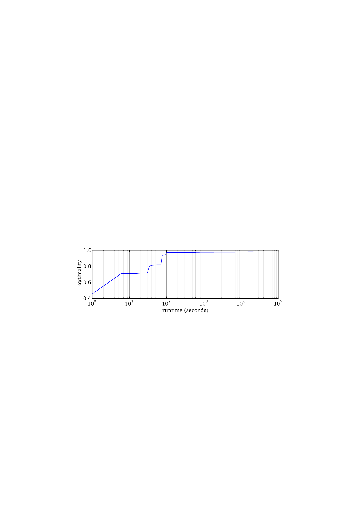
6 Core Payments with Suboptimal
Allocations
For many combinatorial optimization problems good solutions often can be found
quickly, even though finding a provably optimal solution may take a very long time.
fig. 6.1 shows a typical example of WD with 336 slots and 50 bidders, where a feasible
solution with 95% optimality could be reached within a few minutes. This is a com-
mon phenomenon in many combinatorial optimization problems.
Figure 6.1: Reduction of the duality gap over time
Without the ability to guarantee an optimal solution quickly enough for a practical
application, one would naturally consider a provably high-quality solution that can be
found quickly. Most industrial MIP solvers (e.g., CPLEX, Gurobi) provide absolute
and relative worst-case optimality gap parameters, allowing the optimization routine
to terminate if the optimality gap (difference between the best feasible solution and
the theoretical bound) falls below some target or is a small enough percentage of the
best feasible solution, respectively. For now, we leave the exact specification of how a
“good enough” approximate solution is qualified, but motivated by fig. 6.1, the reader
34

6 Core Payments with Suboptimal Allocations
may assume a 5% optimality gap or an at-least-95%-optimal solution for concreteness.
We will thus write WD
a
for any qualified approximation of a WD value and consider
an implementation using these approximations in place of true WD values. Similarly,
we will write z
a
(p
t
) for separation problem values found using nearly-optimal solutions.
Problems can arise, however, during the VCG and core price calculation when ac-
cepting these approximate or nearly-optimal solutions. For example, under truly op-
timal solutions, with the standard assumption of free disposal, WD(K
−k
) is always at
most the value of WD(K). But with a series of nearly-optimal computations this is
not guaranteed, opening the possibility that one might compute an approximate VCG
payment with b
∗
k
− (WD
a
(K) − WD
a
(K
−k
)) > b
∗
k
. Similarly, under nearly-optimal
computation the coalitional value of SEP
t
can be higher than the value of the WD.
If this happens, the newly generated constraint added to EBPO
t
can cause an infea-
sibility if
k∈W \C
t
b
∗
k
< z
a
(p
t
) −
k∈W ∩C
t
p
t
k
. Two different solutions are presented to
address this problem that can potentially arise during computations.
6.1 The TRIM Algorithm
With known b
∗
k
values determining individual rationality (IR) constraints (i.e., pay-
ments must not exceed bids), a natural first approach is to adjust each WD-based
result so that it fits into the IR region.
For the VCG prices this technique makes use of the fact that:
b
∗
k
≥ p
vcg
k
≥ 0 ∀k ∈ W (6.1)
whereas for the constant right-hand side (RHS) of the constraints in the EBPO
t
, we
must always have:
k∈W \C
τ
b
∗
k
≥ z(p
τ
) −
k∈W ∩C
τ
p
τ
k
∀τ ≤ t (6.2)
Thus our first algorithm
1
is to simply trim the infeasibilities based on known bids,
represented in Algorithm 1 in the two steps using min functions.
1
In all algorithmic implementations that follow, we assume that all feasible integer solutions are
stored by the optimizer and used to generate bounds on subsequent optimizations using alternate
objective functions.
35
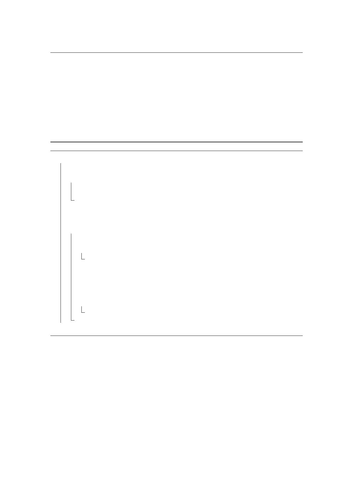
6 Core Payments with Suboptimal Allocations
Algorithm 1: Core Price Calculation – TRIM
begin
Solve: WD
a
(K)
for k ∈ W do
Solve: WD
a
(K
−k
)
p
vcg
k
← min(b
∗
k
, b
∗
k
− (WD
a
(K) − WD
a
(K
−k
)))
p
1
← p
vcg
θ
0
←
k∈W
p
vcg
k
while true do
Solve: SEP
t
if z
a
(p
t
) ≤ θ
t−1
then
Break: ‘core’ price vector found
α
t
← min
k∈W \C
t
b
k
, z
a
(p
t
) −
k∈W ∩C
t
p
t
k
Add constraint
k∈W \C
t
p
k
≥ α
t
to EBPO
p
t
, θ
t
← Solve: EBPO
if (C
t
, θ
t
) = (C
t−1
, θ
t−1
) then
Break: no better price vector possible
Iterate: t ← t + 1
end
36

6 Core Payments with Suboptimal Allocations
6.2 The REUSE Algorithm
An alternative to trimming infeasibilities is based on the observation that whenever an
infeasibility is found, the validity of expressions (6.1) and (6.2) imply that an update
can be made to an approximate WD value, from a previously best-known feasible
solution to a new tentatively-optimal feasible solution. To implement this change,
the storage of any value based on a winner-determination solution can no longer be
treated as constant, and must be regenerated at each iteration based on current WD
a
values. This includes VCG price estimations and the RHS values for generated core
constraints, whose definitions must be reformulated based on current WD
a
values.
Thus our second approach is to store a list of all discovered WD
a
(C) values, reusing
all coalitions found so far and reformulating the entire separation problem and EBPO
problem at each iteration, noting that the set of relevant core constraints, and in-
deed the set of winners itself, may be changing as new information becomes available.
Whenever we run WD
a
(the first time, to compute each VCG price, and inside each
run of SEP) we get a new collection of feasible bids, representing a coalition of win-
ners, and we check these values against our current list of coalitions and WD
a
values.
If the coalition has not been found before, our list is extended to include it among
the “potentially important” coalitions to consider. If any superset coalition has been
listed previously but with a lower coalitional value, we can update it to the current
WD
a
(C) value, as a new better approximation has been found.
Because we will now store the blocking coalitions C
t
and its value instead of z(p
t
)
after each SEP
t
has been solved, we are forced to work with a reformulation of core
constraints based on WD
a
values rather than separation levels. For a general winner-
determination problem (i.e., with respect to any alternative bidding language) the core
constraints can be expressed with the alternative, equivalent expression which can be
derived by substitution:
k∈W \C
τ
p
k
≥ WD(C
τ
) −
k∈W ∩C
τ
b
∗
k
∀τ ≤ t (EBPO
t
’.1)
37

6 Core Payments with Suboptimal Allocations
Using this formulation of the core, we can generate a constraint in EBPO for any
C
τ
found so far using the current best-approximation WD
a
(C
τ
) in place of WD(C
τ
).
For bidding languages with only one relevant bid b
k
per bidder (as it is the case in the
scenarios presented in chapter 8), this constraint can be further simplified, resulting
in the following formulation (6.3) in place of EBPO
t
’.1.
k∈W \C
τ
p
k
≥
k∈C
τ
\W
b
k
∀τ ≤ t (6.3)
This new set of constraints provides an intuitively pleasing interpretation of core con-
straints in the TV-ad context: Any subset of winners pays enough to match the
counter-offer including a set of losing bidders that would otherwise benefit the seller,
a direct analogue to second-prices.
While it is not guaranteed that each stored coalition C
t
provides a potential maximally-
violated coalition at the end of the constraint generation process, the addition of all
constraints found at any point drastically improves the overall performance of the
algorithm in comparison to having to completely rebuild a set of blocking coalitions
after a change in W . That is, it is better to re-use potentially redundant constraints
than to start over, looking for relevant constraints from scratch each time the set of
winners is updated. Also, since the core-pricing is computed as linear problem without
integer constraints, it is not computationally expensive to have redundant constraints.
The formulation of the separation problem as an altered WD problem has the ad-
ditional benefit that all feasible solutions remain feasible for a WD or SEP
t
instance.
MIP solvers store feasible (integer) bases internally, and if the separation problem is
implemented as the same problem instance with some changes to objective coefficients,
all feasible bases stored as a branch-and-bound tree remain feasible and thus provide
immediate bounds on the SEP
t
problem, making efficient use of all information found
by the solver. This made it progressively more difficult to find relevant feasible solu-
tions. Therefore, in our experimental evaluation we allowed for longer time limits on
the optimization routine for later SEP
t
instances.
The difference in the quality of the TRIM and REUSE approaches, in terms of
38
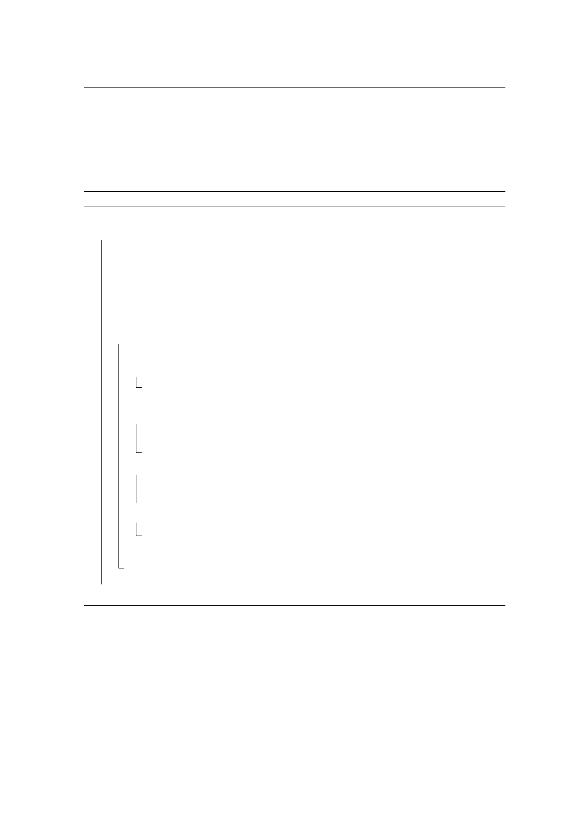
6 Core Payments with Suboptimal Allocations
Algorithm 2: Core Price Calculation – REUSE
Data: cs: Set<Coalition>, wwb: HashMap<Bidder,Coalition>
begin
Initialize: cs, wwb
W ← updateCoalitions(cs, WD
a
(K), wwb)
ebpo ← null
p
vcg
← p
1
← Create Vickrey prices using W and wwb
θ
0
←
k∈W
p
vcg
k
while true do
C
t
, z
a
(p
t
) ← SEP
a
(W, p
t
)
if z
a
(p
t
) ≤ θ
t−1
then
Break: ‘core’ price vector found
C
∗
← updateCoalitions(cs, C
t
, wwb)
if C
∗
= W then
W ← C
∗
ebpo ← null
if ebpo = null then
p
vcg
← Recreate Vickrey prices using W and wwb
ebpo ← Create EBPO
t
’ using W , cs and p
vcg
else
Add constraint to ebpo so that
k∈W \C
t
p
k
≥ val(C
t
) −
k∈C
t
∩W
b
∗
k
p
t
, θ
t
← solve EBPO
t
’
Iterate: t ← t + 1
Return: (W, p
t
)
end
39
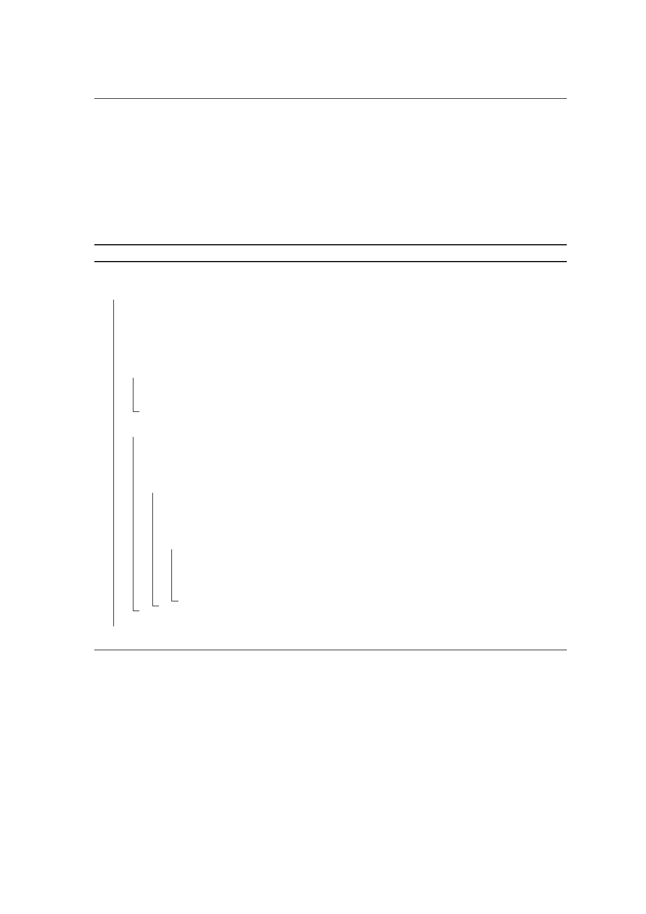
6 Core Payments with Suboptimal Allocations
Function Core Price Calculation – REUSE – updateCoalitions(cs, C
new
, wwb)
Data: cs: Set<Coalition>, wwb: HashMap<Bidder,Coalition>
begin
C
best
← best(cs)
dirty ← false
cs ← cs ∪ {C
new
}
if val(C
new
) > val(C
best
) then
C
best
← C
new
dirty ← true
while dirty do
dirty ← false
missingW inners ← C
best
\ wwb
for k ∈ missingW inners do
wwb[k] ← WD
a
(K
−k
)
cs ← cs ∪ {wwb[k]}
if val(wwb[k]) > val(C
best
) then
C
best
← wwb[k]
dirty ← true
Break
Return: C
best
end
40
6 Core Payments with Suboptimal Allocations
closeness to core-selecting prices, can be described as follows. Let ζ
t
C
represent the
amount that the final prices p
t
and allocation x
t
violate the core-defining constraint
(with respect to submitted bids) indexed by coalition C. Let trim
t
denote the amount
“trimmed” in the final iteration of the TRIM algorithm, i.e., trim
t
= max(0, z
α
(p
t
) −
k∈W ∩C
t
p
t
k
−
k∈W \C
t
b
∗
k
). Finally, let gap
t
represent the final absolute optimality
gap when solving SEP
t
. Theorem 2 provides simple bounds on possible deviation from
optimality-based core-selecting prices. This result indicates that the optimality gap
(in absolute rather than relative terms) of the final separation measures the potential
for violation of core-selection under a nearly-optimal approach, with any trimming
performed by the TRIM algorithm translating one-to-one into further potential for
core violation.
Theorem 2. For a fixed set of bids, ζ
t
C
≤ gap
t
∀ C ⊆ K under REUSE, while ζ
t
C
≤
gap
t
+ trim
t
∀ C ⊆ K under TRIM.
Proof. Core constraints are most often written as
k∈C
π
k
≥ WD(C), where C here
must include the seller and π represents each player’s payoff. Suppose such a constraint
is violated and replace payoffs with surplus for bidders (i.e., b
∗
k
−p
t
k
) and total payments
for the seller. We get that for some positive value ζ
t
C
:
k∈C
p
t
k
+ ζ
t
C
= WD(C) −
k∈C
(b
∗
k
− p
t
k
)
Under the REUSE algorithm this expression becomes:
z
a
(p
t
) + ζ
t
C
= z(p
t
, C)
because the final separated cut must be tight, and where z(p
t
, C) represents the true
value of the separation objective function evaluated at the feasible solution implied
by WD(C). But since that same feasible solution was a candidate when solving SEP
t
approximately, by the definition of the optimality gap we must have:
z
a
(p
t
) + gap
t
≥ z(p
t
, C)
with the desired result for REUSE following by substitution. The result follows anal-
ogously for TRIM, with the difference that the second line becomes:
z
a
(p
t
) − trim
t
+ ζ
t
C
= z(p
t
, C)
41

7 The TvAuction Platform
After determining the relevant allocation and payment rules, a prototype of the mar-
ket design was implemented in order to observe the performance and efficiency of the
algorithm. The component created during this step was coined TvAuction Processor
and forms one of the components presented in this chapter. In addition to the auction
processor, a series of other components were created to ease the interaction with the
created market design, including a middleware server and a front end application. In
combination, these components allow the demonstration, simulation and interaction
with created market scenarios in a graphical and intuitive way.
The scope of this prototype is to deliver an extensible system, suited for simulations
with business partners, i.e. participants who have a deep knowledge about the target
market, but not necessarily about the internals of the implemented market design or
auction theory in general. Several requirements regarding the usage and scalability
were therefore elicited and subsequently implemented:
• Client access should be easy, if possible without the installation of client-side
software.
• The interface should support all implemented bidder-specific valuations, espe-
cially the insertion of multiple (b
j
, w
min
j
) bundles and definition of a custom
priority vector W
k
.
• Bidders should be able to persist and review their changes without directly
submitting them to the auction processor.
• It should be possible to run auctions in parallel without affecting the overall
performance of a single auction run.
42
7 The TvAuction Platform
7.1 System Architecture
Because of the computational hardness of the allocation and pricing problems (see
chapter 6) that form the basis of the auction processor, the system had to be planned
in a distributed manner from the start, permitting horizontal scaling on all computa-
tionally expensive components. Before further defining what components are catego-
rized as such, a short overview is given and additionally illustrated in fig. 7.1. Central
elements of the platform are the TvAuction Front End, Middleware and Processor.
Each of these components concentrates on one specific task needed for the system to
work as a whole:
• The Front End’s main task is to facilitate user interaction and discovery with
existing auctions.
• Instances of the Processor are used to actually solve the allocation and pricing
of a specific auction.
• The Middleware is responsible for all communication between the components
and the persistence of user and processor data.
In addition to the core elements, several helper components are needed to facilitate
communication. This includes a static web server to serve the initial front end payload
and a thin network wrapper for the auction processor.
7.2 The TvAuction Processor
The processor forms the component of the TvAuction platform responsible for the allo-
cation and pricing of an auction. It is intentionally designed in a protocol-independent
way, only implementing the bare necessities to interface with it in order to load scenar-
ios, i.e. a list of advertisement slots with its reserve prices and the associated bidders’
valuations.
Calling the processor can be done either by directly importing the exposed TvAuction-
Processor class and the needed data types, or by using pipes. While the former allows
a very high amount of flexibility, the latter proves especially useful if the processor
43
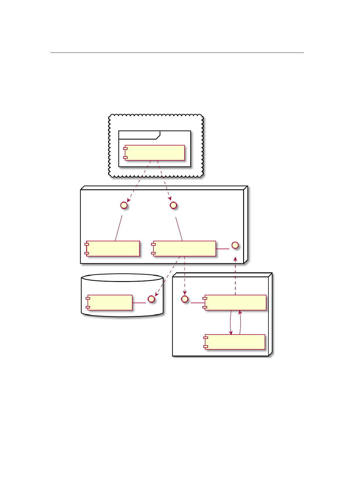
7 The TvAuction Platform
Client
Web Browser
Web Server
Database Server
Processor Server
TvAuction Front End
REST
ZMQ
HTTP
Static Web Server TvAuction Middleware
MySQL Server
SQL
ZMQ
TvAuction Supervisor
TvAuction Processor
Figure 7.1: Structure of the TvAuction Platform
44
7 The TvAuction Platform
Figure 7.2: Running the TvAuction Processor from the command line
should be run on an on-demand basis, as it is the case for simulations, and was indeed
implemented exactly because of this. The “usage page”, which is shown when calling
the processor without arguments in a terminal (see fig. 7.2) aids the easy adjustment
of parameters even when used without directly importing the module.
languages and methodologies
After initially defining the requirements needed for an easy implementation of the
component, the author decided to implement the presented algorithms in the Python
programming language. The high number of scientific libraries such as NumPy and
SciPy
1
, the relative conciseness and the possibility to overload basic mathematical
operators were influencing factors leading to this decision.
The processor’s implementation is highly dependent upon a custom build of the
PuLP-OR library
2
. PuLP-OR acts as a facade for a series of commercially and freely
available solver libraries, including the GNU GLPK, CPLEX and GUROBI, allowing
1
see http://www.scipy.org
2
see http://github.com/ruxkor/pulp-or
45
7 The TvAuction Platform
the adaption and change of the solving library with minimal alterations to the code.
The component’s size results in under 350 SLOC
3
, and is about 1200 SLOC in
total including tests and analysis tools. The small size is attributed partly to the
used language and libraries, but also to the architectural decision to refrain from
implementing anything but the necessary parts for the actual allocation and pricing
in this component.
7.3 The TvAuction Front End
After having implemented a part that allows the allocation and pricing of TV adver-
tisement slots, a component is needed that allows a user to easily interact with existing
auctions and express his preferences. The TvAuction Front End provides an interface
to access exactly this information and interact with it in a graphical way.
Instead of implementing a custom communication protocol and the need for the
manual deployment of client software to access the TvAuction platform, the TvAuc-
tion Front End runs directly inside any recent web browser. The browser is not only
used as a means of accessing information located on a remote server: The TvAuction
Front End represents a complete application that in itself consists of several tiers re-
sponsible for communication, representation and stateful persistence of all user actions.
Since the middleware is only contacted for data input and persistence the user is
able to experience a rich and dynamic experience without any unnecessary round-trips
to a remote location for e.g. generating graphs and markup, or filtering information
regarding campaigns or adverts. During the creation and adjustment of any values
regarding a campaign, the client typically only connects twice to the middleware: one
time for retrieving the stored campaign information of the bidder, and one time, when
the user decides to save or publish his campaign.
3
Source Lines of Code
46
7 The TvAuction Platform
fig. 7.3 shows an example of pure client-side data interaction. In it, the user is
adjusting his priorities of the time slots available for sale during a specific campaign.
Figure 7.3: Adjusting the target values
languages and methodologies
The requirement to run the front end of the TvAuction platform without any ad-
ditional installation on the client’s computer greatly limits the available choices in
this regard: Excluding third party plug-ins, the only languages available in modern
browsing environments are HTML / CSS and its Document Object Model (DOM) as
representational layers and JavaScript for application logic.
Due to historical reasons, the implementation of the underlying specifications of
these languages varied, sometimes in non-trivial ways, in the last years. The speci-
fication, how the representational layer interacts with the application logic was also
never formally specified, leading to sometimes unmaintainable and often not testable
code artifacts if not taken care of (see Zakas, 2012).
47
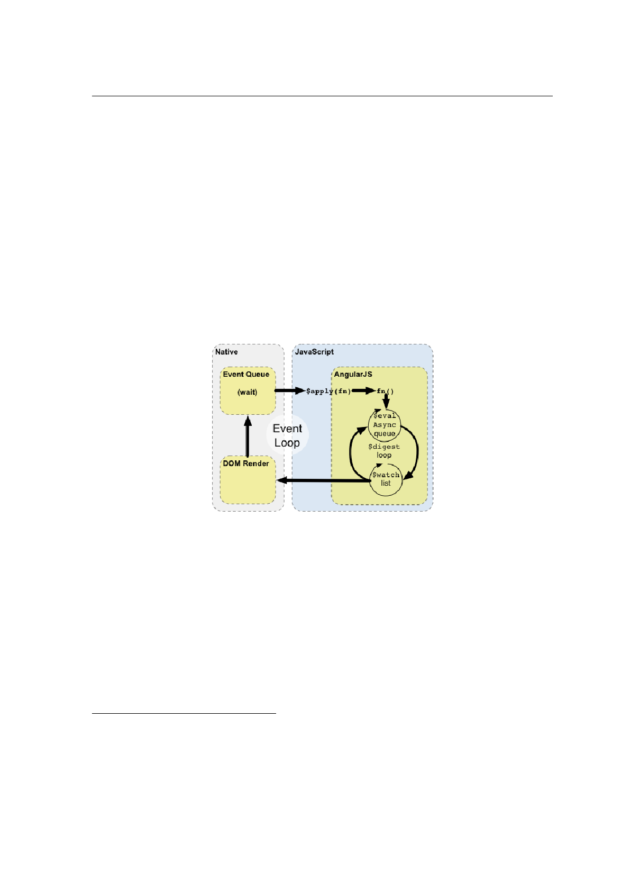
7 The TvAuction Platform
While the inconsistent implementations of the HTML and JavaScript specifications
have diminished over the last years especially with the ongoing adoption of HTML5
and ECMAScript 5.0 (see Smith and Knipp, 2012), the language structure was never
changed significantly in order to maintain backwards compatibility to prior versions.
The risk of writing unmaintainable code is therefore not diminished as the core lan-
guage structure was not changed significantly. In order to cope with this risk, a high
number of JavaScript frameworks have emerged in the last years, often with different
approaches of how the problem of testability, separation of concerns and maintainabil-
ity should be addressed
4
.
Figure 7.4: AngularJS – Interaction with the Browser’s Event Loop
5
Google’s AngularJS framework is a JavaScript MVC-Framework framework with
clear separation of concerns, a focus on testability and the embrace of already existing
technologies, i.e. the predominant usage of tools already available in the browser such
as HTML for the representation and JavaScript for all application logic. One of the
key features of AngularJS is the possibility to easily implement bidirectional bind-
ings between representational elements and business objects, as seen in the schematic
runtime overview in fig. 7.4, vastly reducing the amount the developer has to spend
4
A list with implementations of a simple “To-Do list” applications for many of the existing frame-
works can be found under http://addyosmani.github.com/todomvc
5
Source: http://docs.angularjs.org/guide/concepts
48
7 The TvAuction Platform
writing synchronization logic. The JavaScript library “Data Driven Documents”
6
, or
D3 in short, allows the programmatorical representation and transformation of data
in form of specially crafted objects such as graphs or tables. It is exclusively used for
all visualizations and graphs implemented, as it fits directly into AngularJS’s prin-
ciple of having a “single source of truth” in the application logic. D3 extends the
possibilities of data manipulation with features such as drag-and-drop and provides a
series of commodity functions to generate Scalable Vector Graphics out of data input
or modification. The graph seen in fig. 7.3 is an example of this.
7.4 The TvAuction Middleware
After the deployment of the TvAuction Front End to the client, the client’s only point
of interaction for dynamic content and commands is through the REST
7
interface of
the Middleware when necessary
8
. Specifically, this refers to
• user authentication (log in, log out)
• campaign management (create, update, delete, publish, unpublish)
The Middleware accepts not only user input however, but is also responsible for issu-
ing commands regarding the initialization and launch of auctions on a target Processor
Server. As the TvAuction processor has no remote capabilities, a thin supervisor has
been written that interfaces with the Middleware via ZeroMQ
9
sockets. A schematic
sequence diagram is shown in fig. 7.5, depicting the different ZeroMQ sockets in use
during the discovery of a free auction processor and the subsequent auction allocation
6
Official Website: http://d3js.org
7
REST (Representational State Transfer) is a software architecture for distributed systems, such
as *-RPC or SOAP. It differs from these specifications as it embraces the Hypertext Transfer
Protocol as its primary protocol and makes use of existing HTTP verbs such as GET, POST,
PUT and DELETE to expose resources.
8
As stated in the previous sections, all interaction with the data, i.e. its visualization and filtering
happens directly inside the client environment.
9
ZeroMQ is a high-performance asynchronous messaging library, aimed at scalable distributed ap-
plications. Although featuring a message-queuing system, it does not require a dedicated message
broker, which also depicts its fundamental difference to protocols such as AMQP.
49
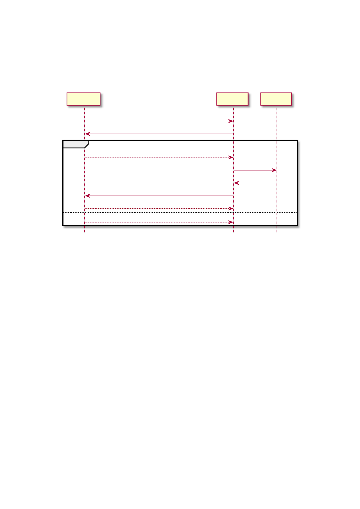
7 The TvAuction Platform
to an instance.
Middleware Supervisor Processor
0MQ PUB isFree()
0MQ REQ free [bool]
alt
[supervisor.free and not auction.allocated]
0MQ REP solve(auction)
solve(auction)
result
0MQ REQ auctionSolved(auctionId, result)
0MQ REP ACK
0MQ REP ACK
Figure 7.5: ZeroMQ sockets used during auction solving.
All data regarding user authentication, campaign management and auction man-
agement and solving is persisted and retrieved from a relational database. As the
middleware maintains only a minimal amount of state, the horizontal scaling of this
component can easily be realized in later works.
languages and methodologies
Being an “interpreter” between user input, a persistence layer, and the auction solving
processors, the main tasks of the middleware revolve around events, often triggered
by external resources. This approach is a good fit for environments whose concurrent
execution model is not based on threads but on an asynchronous eventing model, a
paradigm that started gaining mainstream popularity in the last years with articles
such as “The C10K Problem” (see Kegel, 2006), followed by event-driven implementa-
tions for a variety of languages. Node.js, a server-side JavaScript environment based
on Google’s JavaScript implementation V8, provides indeed that: In it, programming
in an event-driven manner is supported at the language level and is indeed the norm for
50

7 The TvAuction Platform
input/output operations within this framework. This differs from implementations in
many other languages where event-driven methodologies are implemented as libraries
(see Tilkov and Vinoski, 2010).
The relative ease to implement responsive, non-blocking applications with Node.js
and the possibility to communicate with the Front End using the same language were
influencing factors for using this JavaScript environment. In addition, the provided
event-driven methodology directly fits with the paradigms of the internal communi-
cation system used, ZeroMQ, which is based on asynchronous events and messages.
Although the inherent data structure is not highly relational, all data is persisted in
a MySQL database in order to allow an easier interaction with already existing tools.
51
8 Experimental Evaluation
In this chapter, the solution quality of the presented algorithms under constrained
computation time is analyzed. During the planning and implementation of the system,
a series of interviews were taken with employees of a television channel marketing
agency to gain further insights in addition to general market research discussed in
chapter 2. Because we could not access the private valuations of potential bidders,
the input data was generated algorithmically, as seen in the next sections.
scenario generation
Our industry partner, a TV channel, had an existing , first-serve booking system,
providing a realistic distribution of baseline prices for historical valuations. The anal-
ysis of the booking system and interviews with sales managers of the TV channel and
marketing agencies allowed us to generate a series of realistic scenarios for simulations.
The relevant points are as follows:
• A typical campaign duration is from one to four weeks, averaging two weeks.
1
• An advertisement slot is 120 seconds long, but can be pre-filled before the auction
starts due to the existing booking system (effectively reducing capacity in a slot).
• The duration of an ad is variable and typically between 10 and 30 seconds.
• Up to 50 different bidders (media agencies) are interested in placing ads during
the average campaign time span.
1
Although the reported evaluation concentrates on a biweekly market (336 slots), a series of runs
for 168 slots (one week) and 504 slots (three weeks) was also performed to verify the robustness
of the results presented here. The results were similar to the biweekly market and will therefore
not be reported explicitly.
52
8 Experimental Evaluation
• Each bidder has its own budget and target group which defines the slots he is
interested in.
• The reserve price per second during a particular time is set by the TV channel.
Slots are typically grouped into price groups with different reserve prices.
name parameters distribution
fixed, {µ; σ} or {λ}
I slot qty 336 -
J bid qty 50 -
K bidder qty 50 -
c
i
slot duration {60; 30} normal
r
i
slot reserve price steps (in €/s) [1, 2, 5, 10, 50, 75] {1.2} poisson
d
k
advert duration {20; 10} normal
β
j
bid base price (in €/s) {50; 25} normal
w
min_rel
j
min
of campaign priorities (in %) {30; 20} normal
- correlation of w
i
to r
i
- linear
- distribution of p
ij
around the priority/price value - normal
Table 8.1: simulation input parameters
Based on this information, a series of parameters and distributions were derived to
define the random variables of our experiments (see table 8.1). All generated values
are fit into their appropriate boundaries; for normal distributions these boundaries
are [0; 2µ] whereas for Poisson distributions based upon a list L the maximum value
is the length of this list. The bid base price β
j
can be interpreted as how much a
bidder would maximally spend to obtain the right to reach one priority point with his
ad for one second. The actual bid price for a campaign is then calculated as follows:
b
j
= d
k
β
j
w
min
j
.
53

8 Experimental Evaluation
8.1 Research Design
A series of primary and secondary attributes will be used as primary metrics for the
overall quality. These attributes form the basis of the comparison between the differ-
ent algorithms by taking into account efficiency, revenue, and speed.
In order to directly compare the quality of the generated prices, a series of sec-
ondary attributes are also evaluated. These values allow a comparison on how ‘fair’
an outcome can be perceived and how much a bidder can potentially gain by shading
his bid
2
by comparing the ratios of the bid vector to the resulting payment vector and
to the generated Vickrey price vector, respectively.
• Primary Attributes
1. the efficiency in terms of the coalitional value
2. the overall revenue
3. the duration, measured by the iterations needed to terminate
• Secondary Attributes
4. the ratio of bids to payments
5. the ratio of bids to Vickrey prices
As each scenario has a different set of auctioned slots and bid price/priority tuples,
the outcome of each algorithm has to be compared on a within-scenario basis, allowing
us to make several comparisons of the TRIM and REUSE algorithms on the same data
set. For each primary attribute, we therefore computed a REUSE to TRIM ratio. As
an example, the ratio of revenue between the two approaches, with a ratio lower 1
indicates greater revenue for TRIM.
In order to compare secondary attributes across different scenarios, such as the
ratios p
k
/b
k
, p
vcg
k
/b
k
and p
vcg
k
/p
k
, a series of identical quantiles were built. Because
2
For more information about bid shading in core-selecting auctions see Day and Raghavan (2007);
Goeree and Lien (2009).
54

8 Experimental Evaluation
the values used in this comparison are already relative to the respective prices, each
quantile is then compared on a per-scenario basis by subtracting the TRIM value
from the REUSE value, meaning that if the resulting value is > 0, the REUSE value
is bigger than its TRIM counterpart, and vice versa. An example is shown in table
8.2, which illustrates typical behavior; REUSE runs longer and generates less revenue
than TRIM, but is more efficient, and since offering lower prices on a fixed set of bids,
provides better incentives for truthful revelation. The TRIM technique, on the other
hand, often results in pay-as-bid pricing, which has the worst incentives for truthful
revelation.
example instance REUSE TRIM
ratio
revenue 36 569 158 42 766 735 0.86
coalitional value 46 073 899 44 590 749 1.03
runtime 2.8h 2.0h 1.42
switches 7 1 7.00
difference
median(p
k
/b
k
) 0.79 1.00 -0.21
median(p
vcg
k
/b
k
) 0.58 1.00 -0.42
median(p
vcg
k
/p
k
) 0.78 1.00 -0.22
Table 8.2: scenario comparison – example
Based upon the distributional parameters of table 8.1, 20 scenarios were generated.
These scenarios were then run with the optimizer settings as provided in table 8.3.
As the resulting performance should be comparable to a typical personal computer,
all experiments were run on Dual Socket Octo Core AMD Opteron 2.4GHz Linux
computers with 8GB DDR2 RAM as part of a Linux Cluster.
8.2 Comparison of REUSE and TRIM
In this section, the results of the two algorithms are compared using the primary and
secondary attributes described above (see figures 8.1 to 8.5).
55
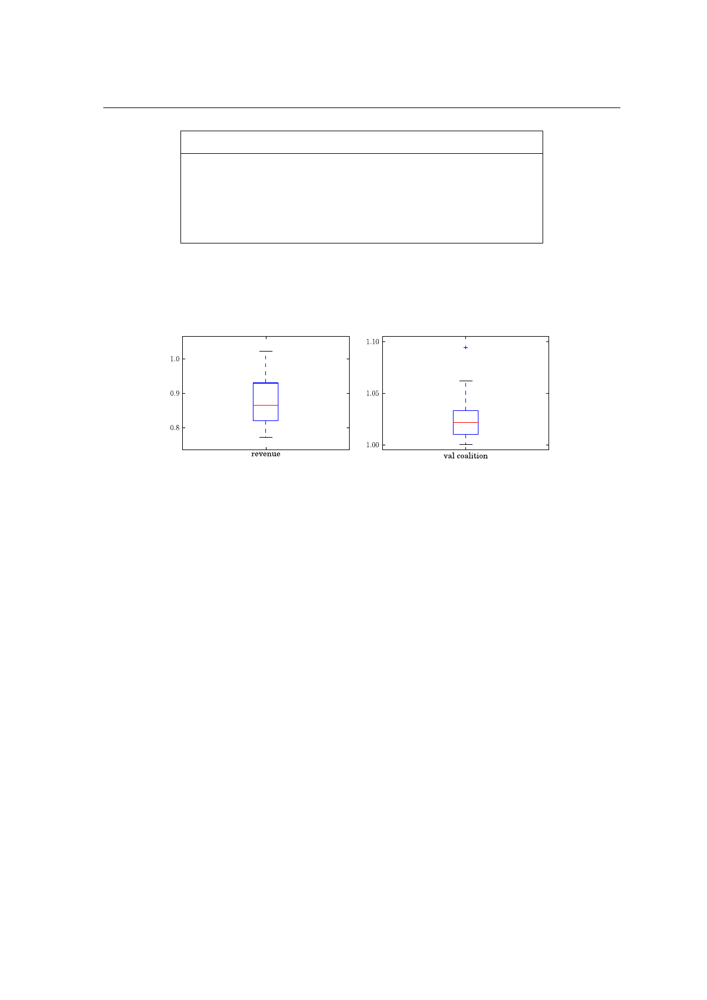
8 Experimental Evaluation
Name REUSE TRIM REUSE_LONG
Algorithm reuse trim reuse
Runs 20 20 20
Time Limit – WD 300s 300s 3600s
Time Limit – Other 300s 300s 600s
Table 8.3: runtime specifications
Figure 8.1: REUSE, TRIM – revenue, efficiency
As the REUSE algorithm is able to change the winning coalition if an improvement
is found, it is not surprising that its median efficiency is 2% higher (see fig. 8.1). What
may be surprising at first sight, however, is that the actual revenue generated by the
REUSE algorithm is consistently lower, despite the fact that a better winning coalition
yields a higher coalitional value or social welfare, respectively. The median revenue it
generated is only 87% of the TRIM revenue for the same scenario.
The REUSE algorithm typically switched its set of winners 3.5 times (see fig. 8.2).
Switching also initiates new automatic VCG calculations, partially explaining why the
REUSE algorithm takes, at its median, 63% more iterations than the TRIM counter-
part.
Having seen that the REUSE algorithm does indeed find a more efficient winning
coalition, what causes TRIM to return a higher price vector consistently? The reason
for this is twofold. First, a much higher bid to VCG price ratio for the TRIM algo-
56
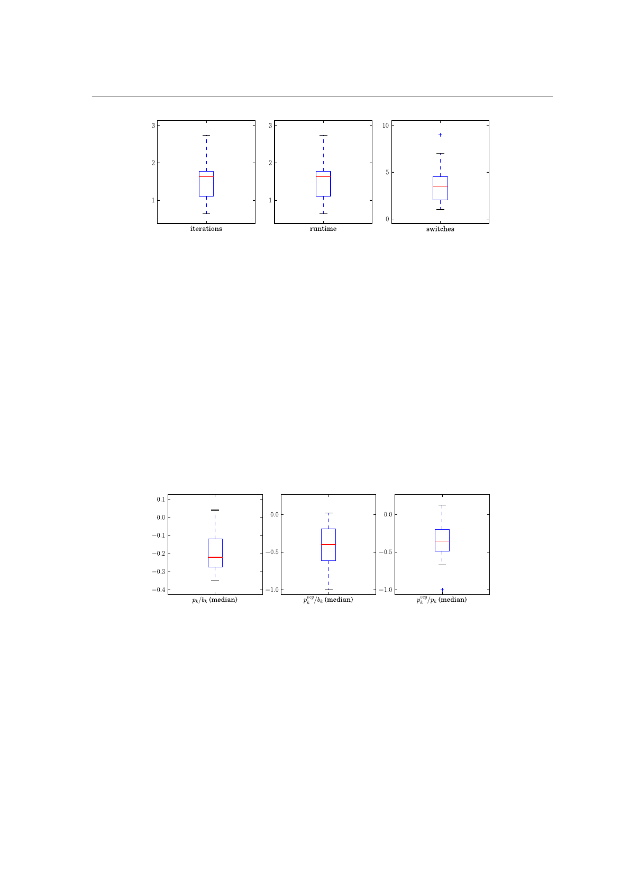
8 Experimental Evaluation
Figure 8.2: REUSE, TRIM – iterations, runtime, switches
rithm sets a very tight lower boundary for the final ‘core’ price. Indeed, the median
of this ratio is 40% higher when compared to the REUSE algorithm, primarily caused
by the lower efficiency (fig. 8.3). Second, because of a potentially less efficient winning
coalition, it is more likely for the blocking coalition C
t
to have a higher value than the
currently winning allocation W. Under these circumstances it is impossible for the
TRIM algorithm to reach a convergence between the SEP
t
and EBPO
t
, even when
reaching the winning coalition’s bid prices. This situation can be observed in fig. 8.5.
As no further improvement can be found at this point, the algorithm aborts, returning
its current best solution.
Figure 8.3: REUSE, TRIM – price ratios – median
qualitative comparison
The TRIM algorithm not only results in higher values for both ratios at the median,
but throughout the distribution (fig. 8.4). In this figure, each row represents one sim-
ulation run, containing the compared value of 50 quantiles each. Overall, these results
57
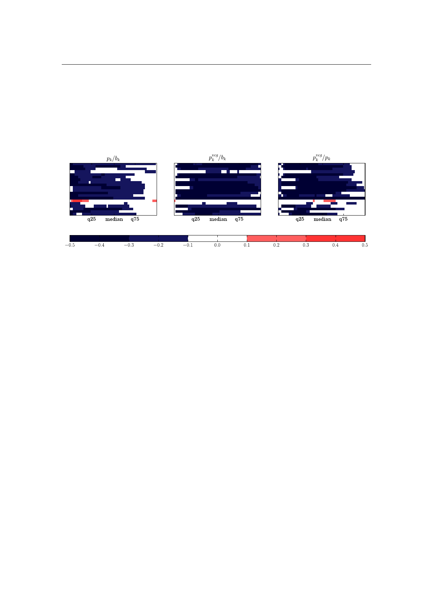
8 Experimental Evaluation
support the claim that if speed and revenue are primary concerns than TRIM may
be more appropriate, especially if the bidders lack the knowledge, time, or sophisti-
cation to shade their bids in order to decrease payments. In other situations, where
the elicitation of truthful bidding and high efficiency are of greater concern, such as
in government auctions, the REUSE algorithm prevails.
Figure 8.4: REUSE, TRIM – price ratios – quantiles
8.3 Comparison of REUSE and REUSE_LONG
As seen in the previous section, the REUSE algorithm seems more appropriate for
finding a core or near-core price vector if enough time is available, and this time
requirement is not orders of magnitude greater than that required for the TRIM algo-
rithm. We now compare the REUSE algorithm results from the previous subsection
with results when this algorithm is run under an extended time limit (REUSE_LONG)
as shown in table 8.3. In this treatment we provide a higher time limit for the initial
winner determination. As noted in chapter 9, this allows the optimization engine to
generate a large number of feasible solutions before settling on a potential set of win-
ners, and since all VCG and separation subproblems are equivalent to the WD problem
with modified objective values, all of these solutions stored in the branch-and-bound
tree are potentially useful for later subproblems. As in the previous section, the re-
sults generated by the REUSE runs will be used as a baseline, but are compared in
the following against the results of the REUSE_LONG (instead of the TRIM) runs.
58
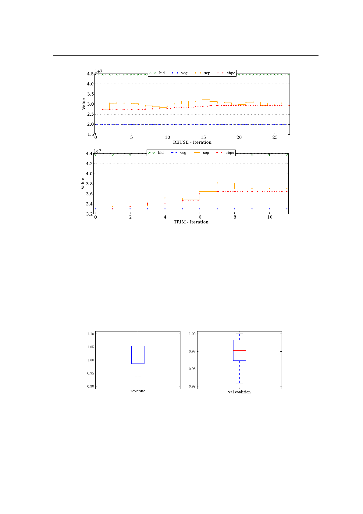
8 Experimental Evaluation
Figure 8.5: REUSE, TRIM – steps (example)
The interpretation of the comparison is analogous to that of the previous section.
The difference in the overall efficiency and revenue differs only marginally, as seen in
fig. 8.6: While the coalitional values REUSE_LONG calculated are 1% higher at its
median, the overall revenue is, slightly lower, reaching 99% compared to the REUSE
runs.
Figure 8.6: REUSE, REUSE_LONG – revenue, efficiency
As the REUSE_LONG runs have a much higher time limit for the initial winner
59
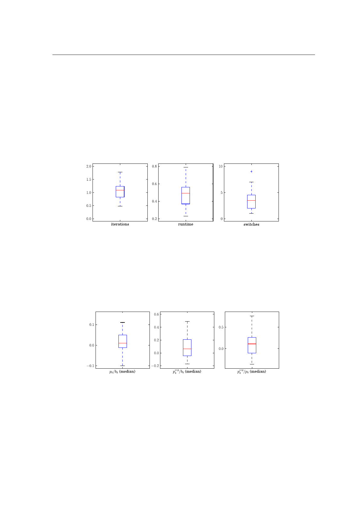
8 Experimental Evaluation
determination, it is to be expected that these runs would hardly, if ever, find a more effi-
cient coalition during the subsequent calculations. Indeed, during the REUSE_LONG
simulations, only in one run an additional switch occured. In addition to the possi-
bility of finding a better “blocking coalition”, this could explain why REUSE takes
9% more iterations than its longer running counterpart (fig. 8.7). The runtime of
an instance of REUSE_LONG nevertheless takes approximately twice as long as the
same REUSE instance; the reduction in switches was therefore not enough to achieve
an overall better runtime.
Figure 8.7: REUSE, REUSE_LONG – iterations, runtime, switches
The difference in the p
k
/b
k
ratio between REUSE and REUSE_LONG are small
(fig. 8.8 and 8.9). This is not the case for the ratio of the bid price to the VCG price.
At its median p
vcg
k
/b
k
is 7% higher for the REUSE runs, similar differences can also
be observed across the entire distribution (fig. 8.9).
Figure 8.8: REUSE, REUSE_LONG – price ratios – median
60
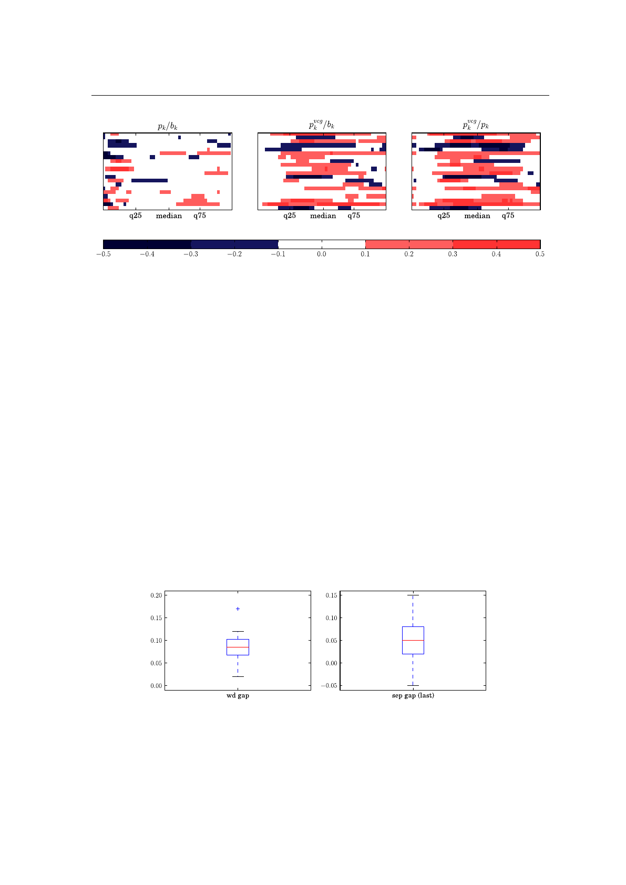
8 Experimental Evaluation
Figure 8.9: REUSE, REUSE_LONG – price ratios – quantiles
qualitative comparison
While returning slightly less revenue, the REUSE_LONG run tends to find more ef-
ficient solutions with a much lower bid/VCG ratio, reducing the amount a player
can potentially gain by deviating from its true valuation. In terms of accuracy
REUSE_LONG is preferable. Illustrated in fig. 8.11 for a particular example, the
difference in the integrality gap of the winner determination and the last SEP
t
prob-
lem calculated is, at its median, 8% and 5% lower for REUSE_LONG, respectively
(fig. 8.10). Although inefficiencies in the initial WD can be corrected through switch-
ing, a premature abort due to lower efficiencies during the pricing rule calculation
directly influences the resulting revenue (see theorem 2). Adding more time here miti-
gates the risk of returning a less efficient coalition during the calculation of each SEP
t
,
and therefore the final price allocation.
Figure 8.10: REUSE, REUSE_LONG – gaps
61
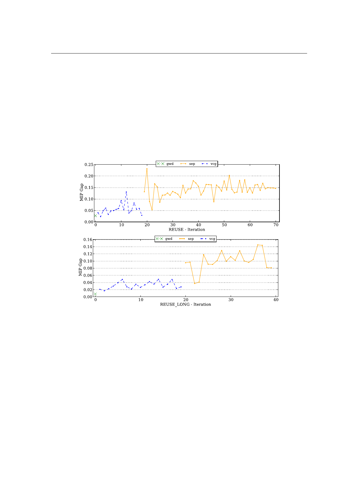
8 Experimental Evaluation
Figure 8.11: REUSE, REUSE_LONG – example of integrality gaps over time
62

9 Conclusion
The structures used in the TV advertisement market did not change significantly
over the last decades: The de-facto standard remains the acquisition of advertisement
time over a first-come, first-served pricing catalog. Additionally, the analysis of this
market regarding its efficiency and the creation of tailored market designs for it is
quite low. Specifically, no market design is known that is addressing the inherent
complementarities of the advertisement market and is also targeting efficiency and
stability, minimizing the incentive the deviate from the participants true valuations of
the requested items. This paper tries to remedy this situation, delivering a compact
bidding language for the market and combines it with a pricing rule that results in
total-payment minimizing bidder-Pareto optimal core pricing, a pricing rule that un-
der certain assumptions (see section 5.2) results in stable outcomes and incentivates
truthful behavior.
In order to cope with the computational expense required to solve the underlying
allocation and pricing problems, the presented allocation and pricing algorithms were
enhanced in their ability to be able to produce reasonable results also with suboptimal
solutions. This allows the presented market design to be used also for markets whose
size would be prohibitively large too solve in reasonable time, given the N P-hardness
of these problems. Two very different approaches were created and subsequently ana-
lyzed regarding their overall revenue, speed, and incentive compatibility by running a
series of simulations for a realistically sized market. The results of these simulations
further supported the utility of the usage of suboptimal solutions for the tackled mar-
ket size, as it enabled the author to generate nearly optimal solutions and core prices.
Complementing the theoretical analysis and presentation of the said market de-
63

9 Conclusion
sign, a system was designed that enables interested parties to experience this market
“hands on”. The implemented prototype allows a bidder to express all relevant details
regarding his planned campaigns in an interactive and graphical way, allowing the par-
ticipation in said markets without the exposure to implementation details regarding
the underlying system structure and algorithms. Being built in a distributed manner
from the ground up, the system scales horizontally in all computationally expensive
components: By adding new computational units to the cluster, it is possible to clear
auctions in parallel without affecting the overall performance of the system. This fa-
cilitates the usage also in scenarios where more than one auction should be held within
a certain period.
In order to further verify the utility of the presented design in this paper, simulations
done directly by the involved parties, i.e. channels and media agencies, would shed
more light on their bidding behavior and valuations: As media agencies typically
act on behalf of their clients, the assumption of quasi-linear valuations regarding the
price of a campaign has yet to be proven. The exploration of further simulations
and alternative market designs that address also nonlinear valuations would therefore
provide an interesting series of topics to follow up upon.
64

10 Bibliography
L.M. Ausubel and P. Milgrom. The lovely but lonely Vickrey auction. Discussion
Papers 03-036, Stanford Institute for Economic Policy Research, 2004.
E. Bauer. Die Erforschung der Absatzmärkte von TV-Sendern. Branchenspezifisches
Marketing. Grundlagen–Besonderheiten–Gemeinsamkeiten. Wiesbaden, pages 751–
773, 2001.
M. Bichler, P. Shabalin, and G. Ziegler. Efficiency with linear prices? a theoretical
and experimental analysis of the combinatorial clock auction. Information Systems
Research, July 2012.
E. Cantillon and M. Pesendorfer. Combination bidding in multi-unit auctions. Dis-
cussion paper, 2007.
Ch. Chekuri and S. Khanna. A polynomial time approximation scheme for the multiple
knapsack problem. SIAM Journal on Computing, 35:713–728, 2006.
C.B. Cheng, H.C. Wu, and C.C.H. Chan. Design of a combinational auction mech-
anism for television advertising market in taiwan. Research Journal of Applied
Sciences, 20:4105–4111, 2012.
P. Cramton. Spectrum auction design. Working paper, University of Maryland, 2009.
P. Cramton and L.M. Ausubel. The clock-proxy auction: A practical combinatorial
auction design. Combinatorial Auctions, 2006.
P. Cramton, Y. Shoham, and R. Steinberg. Simultaneous ascending auctions. Combi-
natorial Auctions, 2006.
65

10 Bibliography
R.W. Day and P. Milgrom. Core-selecting package auctions. international Journal of
game Theory, 36(3):393–407, 2008.
R.W. Day and S. Raghavan. Fair payments for efficient allocations in public sector
combinatorial auctions. Management Science, 53(9):1389–1406, 2007.
J. Goeree and Y. Lien. On the impossibility of core-selecting auctions. Institute for
Empirical Research in Economics University of Zurich Working Paper, (452), 2009.
D. Kegel. The C10K problem. http://www.kegel.com/c10k.html, 2006.
D. Maldoom. Winner determination and second pricing algorithms for combinatorial
clock auctions. Technical report, Discussion paper 07/01, dotEcon, 2007.
P. Milgrom. Package auctions and exchanges. Econometrica, 75(4):935–965, 2007.
N. Nisan, T. Roughgarden, E. Tardos, and V.V. Vazirani. Algorithmic game theory.
Cambridge University Press, 2007.
N. Nisan, J. Bayer, D. Chandra, T. Franji, R. Gardner, Y. Matias, N. Rhodes,
M. Seltzer, D. Tom, H. Varian, et al. Google’s auction for TV ads. Automata,
Languages and Programming, pages 309–327, 2009.
D.C. Parkes. iBundle: an efficient ascending price bundle auction. In Proceedings of
the 1st ACM conference on Electronic commerce, pages 148–157. ACM, 1999.
T. Sandholm. Approaches to winner determination in combinatorial auctions. Decision
Support Systems, 28(1):165–176, 2000.
T. Scheffel, G. Ziegler, and M. Bichler. On the impact of package selection in combi-
natorial auctions: an experimental study in the context of spectrum auction design.
Experimental Economics, 15:667–692, 2012. ISSN 1386-4157.
SevenOne Media. Relevant Set: Sendervielfalt - Sendernutzung 2011. http://www.
sevenonemedia.de/web/sevenone/research_mediennutzung, Jul 2012a.
SevenOne Media. Brutto-Werbemarkt - Gesamtjahr 2011. http://www.
sevenonemedia.de/web/sevenone/research_marktanalyse_werbemarkt, Mar
2012b.
66

10 Bibliography
Y. Shoham and K. Leyton-Brown. Multiagent systems: Algorithmic, game-theoretic,
and logical foundations. Cambridge University Press, 2008.
D.M. Smith and E. Knipp. Javascript: Past, present and future. Technical report,
Gartner Research, Jan 2012.
S. Tilkov and S. Vinoski. Node. js: Using javascript to build high-performance network
programs. Internet Computing, IEEE, 14(6):80–83, 2010.
J. Wilenius and A. Andersson. Discovering equilibrium strategies for a combinatorial
first price auction. In E-Commerce Technology and the 4th IEEE International Con-
ference on Enterprise Computing, E-Commerce, and E-Services, 2007. CEC/EEE
2007. The 9th IEEE International Conference on, pages 13–20. IEEE, 2007.
N.C. Zakas. Maintainable JavaScript. O’Reilly Media, 2012.
67